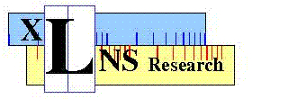

This webpage (derived from www.xlnsresearch.com) is an attempt to be an exhaustive list of Logarithmic Number System references, but naturally it is incomplete. If you have additions or corrections, PLEASE email to the first author of “A Real/Complex Logarithmic Number System ALU” below using the email address (all lower case no space or punctuation): first name middle initial last name at sign this organization dot com. In other words, m...d@x...com
For more about the original www.xlnsresearch.com website, click here. Eventually www.xlnsresearch.com, which has grown out of date, will be retired. New references will be added here only.
The github organization, xlnsresearch, that hosts this webpage also hosts repositories to implement LNS arithmetic in several languages: https://github.com/xlnsresearch/xlns provides many options (base, precision, redundancy) for LNS experimentation in Python, including user-contributed LNS arithmetic algorithms (it is also available via PyPi wheel with pip install xlns); https://github.com/xlnsresearch/xlnscpp provides 16- and 32-bit formats for C++; and https://github.com/xlnsresearch/xlnscuda provides similar formats as C++ for CUDA devices.
New Additions (not in xlnsresearch.com) These ~300 recent references will eventually be merged into the larger list that follows, which spans four centuries of research (from 1614 to 2013).
S. A. Alam and O. Gustafsson, ``Design of Finite Word Length Linear-Phase FIR Filters in the Logarithmic Number System Domain”, VLSI Design, vol. 2014, Article ID 217495, http://dx.doi.org/10.1155/2014/217495
R. K. Agrawal, and H. M. Kittur, “ASIC Based Logarithmic Multiplier using iterative pipelined architecture,” IEEE Conference on information & Communication Technologies (ICT), pp. 362–366 2013.
A. Agarwal, P. Harsha, S. Vasishta, and S. Sivanantham, “Implementation of Special Function Unit for Vertex Shader Processor Using Hybrid Number System,” Journal of Computer Networks and Communications, vol. 2014. Hindawi Limited, pp. 1–7, 2014. http://dx.doi.org/10.1155/2014/890354
S.E. Ahmed, M.B. Srinivas, “An improved logarithmic multiplier for media processing”, J. Signal Process Syst., vol. 91 no. 6, pp. 561-574, 2019. http://dx.doi.org/10.1007/s11265-018-1350-2
Z. Aizaz and K. Khare, "State-of-Art Analysis of Multiplier designs for Image processing and Convolutional Neural Network Applications," International Conference for Advancement in Technology (ICONAT), Goa, India, 2022, pp. 1-11, http://dx.doi.org/10.1109/ICONAT53423.2022.9726109
S. A. Alam, Techniques for Efficient Implementation of FIR and Particle Filtering, PhD dissertation, Linköping University Electronic Press, Linköping, 2016.
S. A. Alam, James Garland and David Gregg, “Low Precision Logarithmic Number Systems: Beyond Base-2”, https://arxiv.org/pdf/2102.06681
S. A. Alam and O. Gustafsson, “Design of Finite Word Length Linear-Phase FIR Filters in the Logarithmic Number System Domain”,VLSI Design, April 2014, https://doi.org/10.1155/2014/217495
F. Albu, "Simplified proportionate affine projection algorithms," 19th International Conference on Systems, Signals and Image Processing (IWSSIP), Vienna, Austria, 2012, pp. 368-371.
N. Alla and S. E. Ahmed, “An Area and Delay Efficient Logarithmic Multiplier”, International Conference on Contemporary Computing and Applications (IC3A), pp. 169–174, 2020, https://api.semanticscholar.org/CorpusID:216587460 .
N. Alla and S. E. Ahmed, “An Area and Delay Efficient Logarithmic Multiplier”, International Conference on Contemporary Computing and Applications (IC3A), pp. 169–174, 2020, https://api.semanticscholar.org/CorpusID:216587460 .
G. Alsuhli, V. Sakellariou, H. Saleh, M. Al-Qutayri, B. Mohammad, and T. Stouraitis, “Number Systems for Deep Neural Network Architectures: A Survey,” arXiv: 2307.05035, 2023.
D. Alex, V. C. Gogineni, S. Mula and S. Werner, "Novel VLSI Architecture for Fractional-Order Correntropy Adaptive Filtering Algorithm," IEEE Transactions on Very Large Scale Integration (VLSI) Systems, vol. 30, no. 7, pp. 893-904, July 2022, http://dx.doi.org/10.1109/TVLSI.2022.3169010
S. W. Ali, M. Sharma, and M. R. Tripathy, “Efficient Method to Implement Arithmetic Operations Using Binary Logarithmic Algorithms for Reduced Circuit Complexity with Error Analysis,” Advances in Intelligent Systems and Computing, Springer Singapore, pp. 889–894, 2018. http://dx.doi.org/10.1007/978-981-10-5903-2_93
G. Alsuhli, V. Sakellariou, H. Saleh, M. Al-Qutayri, B. Mohammad, and T. Stouraitis, “LNS for DNN Architectures”, Number Systems for Deep Neural Network Architectures, Springer Nature Switzerland, http://dx.doi.org/10.1007/978-3-031-38133-1
M S Ansari, S Gandhi, B F. Cockburn, J. Han, “Fast and Low-Power Leading-One Detectors for Energy-Efficient Logarithmic Computing”, IET Computers and Digital Techniques, pp. 1-8, 2019. https://www.ece.ualberta.ca/~jhan8/publications/Approximate%20LOD_IET%20Computers%20&%20Digital%20Techniques%202020.pdf
M. S. Ansari, B. Cockburn, and J. Han, “An Improved Logarithmic Multiplier for Energy-Efficient Neural Computing”, IEEE Trans. on Computers, vol. 70, pp. 614–625, 2021.
M. S. Ansari, V. Mrazek, B. F. Cockburn, L. Sekanina, Z. Vasicek, and J. Han, "Improving the accuracy and hardware efficiency of neural networks using approximate multipliers," IEEE Transactions on Very Large Scale Integration (VLSI) Systems, vol. 28, no. 2, pp. 317--328, 2019.
M. S. Ansari, B. F. Cockburn and J. Han, "A Hardware-Efficient Logarithmic Multiplier with Improved Accuracy," Design, Automation & Test in Europe Conference & Exhibition (DATE), Florence, Italy, 2019, pp. 928-931, https://doi.org/10.23919/DATE.2019.8714868
M. G. Arnold, “RLNStool version 1.0”, https://web.archive.org/web/20080820140202/http://www.cse.lehigh.edu/ caar/rlnstool.html
M. G. Arnold, T. A. Bailey, and J. A. Cowles, “Towards automated verification of logarithmic arithmetic,” arXiv preprint arXiv:2411.12923, 1994.
M.G. Arnold, “Improved DNA-sticker Arithmetic: Tube-encoded-carry, Logarithmic Number System and Monte-Carlo methods,” Natural Computing, Vol. 12, no. 2, pp. 235–246, 2013.
M.G. Arnold, S. Collange, Options for Denormal Representation in Logarithmic Arithmetic, Journal of Signal Processing Systems, vol. 77, pp. 207–220, 2014. https://doi.org/10.1007/s11265-014-0874-3
M. Arnold, E. Chester and J. Cowles, "Guarding the guards: Enhancing LNS performance for common applications," 2016 IEEE 27th International Conference on Application-specific Systems, Architectures and Processors (ASAP), London, pp. 123-130, 2016.https://doi.org/10.1109/ASAP.2016.7760781
M. G. Arnold, I. Kouretas, V. Paliouras and J. R. Cowles, "Under- and Overflow Detection in the Residue Logarithmic Number System," 2019 IEEE 26th Symposium on Computer Arithmetic (ARITH), Kyoto, Japan, 2019, pp. 112-115. https://doi.org/10.1109/ARITH.2019.00030
M. G. Arnold, I. Kouretas, V. Paliouras and A. Morgan, "One-Hot Residue Logarithmic Number Systems," 2019 29th International Symposium on Power and Timing Modeling, Optimization and Simulation (PATMOS), Rhodes, Greece, 2019, pp. 97-102. https://doi.org/10.1109/PATMOS.2019.8862159
M. Arnold, E. Chester, J. Cowles and C. Johnson, Optimizing Mitchell's Method for Approximate Logarithmic Addition via Base Selection with Application to Back-Propagation, 2019 IEEE Nordic Circuits and Systems Conference (NORCAS): NORCHIP and International Symposium of System-on-Chip (SoC), Helsinki, Finland, 2019, pp. 1-6 https://doi.org/10.1109/NORCHIP.2019.8906904
M. G. Arnold, V. Paliouras and I. V. Kouretas, Implementing the Residue Logarithmic Number System Using Interpolation and Cotransformation, IEEE Transactions on Computers, vol. 69, no. 12, pp. 1719-1732, Dec. 2020, https://doi.org/10.1109/TC.2019.2930514
M. Arnold, E. Chester and C. Johnson, "Training Neural Nets using only an Approximate Tableless LNS ALU," 2020 IEEE 31st International Conference on Application-specific Systems, Architectures and Processors (ASAP), Manchester, United Kingdom, 2020, pp. 69-72. https://doi.org/10.1109/ASAP49362.2020.00020
M. G. Arnold, "Towards Quantum Logarithm Number Systems," 2022 IEEE 29th Symposium on Computer Arithmetic (ARITH), Lyon, France, 2022, pp. 76-83, https://doi.org/10.1109/ARITH54963.2022.00022 .
M. Arnold, "Machine Learning using Logarithmic Arithmetic with Preconditioned Input to Mitchell's Method," 2023 IEEE 5th International Conference on Artificial Intelligence Circuits and Systems (AICAS), Hangzhou, China, 2023, pp. 1-5, https://doi.org/10.1109/AICAS57966.2023.10168554 .
A. Avramović, Z. Babić, D. Raič, D. Strle and P. Bulić, “An approximate logarithmic squaring circuit with error compensation for DSP applications”, Microelectronics Journal, Vol. 45, no. 3, pp. 263-271, 2014, https://doi.org/10.1016/j.mejo.2014.01.005
M Azarmehr, A Multi-Dimensional Logarithmic Number System based Central Processing, MS Thesis, University of. Windsor, https://central.bac-lac.gc.ca/.item?id=MR42322&op=pdf&app=Library&oclc_number=676689304
Z. Babic, A. Avramovic, and P. Bulic "An iterative logarithmic multiplier," Microprocessors and Microsystems, vol. 35, no. 1, pp. 23– 33, 2011.
A.D. Babu, C. Gomathy, “Performance Analysis Study of Stochastic Computing Based Neuron,” Intelligent Computing and Applications. Advances in Intelligent Systems and Computing, vol 1172. Springer, Singapore. https://doi.org/10.1007/978-981-15-5566-4_22
A. Banerjee, S. Sarkar, M. Das and A. Ghosh, “Design of reversible binary logarithmic multiplier and divider using optimal garbage”, International Journal of Advanced Computer Research, Vol. 5, no. 18, pp. 2277-7970, March 2015. https://accentsjournals.org/PaperDirectory/Journal/IJACR/2015/3/1.pdf
T. M. Bartol, Jr., et al., “Nanoconnectomic upper bound on the variability of synaptic plasticity”, eLife, 2015. 10.7554/eLife.10778.002
M. Basir, R. Ismail, and S. Naziri, “An investigation of extended co-transformation using second-degree interpolation for logarithmic number system,” FORTEI-International Conference on Electrical Engineering (FORTEI-ICEE). IEEE, 2020, pp. 59–63.
M. Basir, R. Ismail, and M. Isa, “A novel double co-transformation for a simple and memory efficient logarithmic number system,” IEEE International Conference on Semiconductor Electronics (ICSE). IEEE, 2020, pp. 25–28.
J. Bates, Processing with compact arithmetic processing element, US Patent 10,754,616, 2020.
J. Bernstein, J. Zhao, et al. “Learning compositional functions via multiplicative weight updates”, 2021, https://arxiv.org/pdf/2006.14560
L. Boué, “Real numbers, data science and chaos: How to fit any dataset with a single parameter”, https://arxiv.org/pdf/1904.12320
M. B. K. Chaitanya, Y. Sai Teja, K. R. Teja, and G. Ragunath, “An Area Efficient 16-bit Logarithmic Multiplier,” International Conference on Vision Towards Emerging Trends in Communication and Networking (ViTECoN). IEEE, pp. 1–5, Mar. 2019. http://dx.doi.org/10.1109/ViTECoN.2019.8899395
W. Chang, H. Hamad, K.M. Chugg, “Approximation Capabilities of Neural Networks using Morphological Perceptrons and Generalizations”, arXiv:2207.07832. 2022.
M. Chaudhary, P. Lee, “An improved two-step binary logarithmic converter for FPGAs”, IEEE Trans Circuits Syst II: Express Briefs, vol. 62, no. 5, pp. 476-480, 2015.
M. Chaudhary and P. Lee, “Two‐stage logarithmic converter with reduced memory requirements”, IET Computers and Digital Techniques, vol. 8, no. 1. Institution of Engineering and Technology (IET), pp. 23–29, Jan. 2014. http://dx.doi.org/10.1049/iet-cdt.2012.0134
M. Chaudhary and P. Lee, "An improved two-step binary logarithmic converter for FPGAs", IEEE Trans. Circuits Syst. II Exp. Briefs, vol. 62, no. 5, pp. 476-480, May 2015.
H. Chen, Z. Yu, Y. Zhang, Z. Lu, Y. Fu and L. Li, "Low-Complexity High-Precision Method and Architecture for Computing the Logarithm of Complex Numbers," IEEE Transactions on Circuits and Systems I: Regular Papers, vol. 68, no. 8, pp. 3293-3304, Aug. 2021, http://dx.doi.org/10.1109/TCSI.2021.3081517
T. Cheng, J. Yu and M. Hashimoto, "Minimizing Power for Neural Network Training with Logarithm-Approximate Floating-Point Multiplier," 29th International Symposium on Power and Timing Modeling, Optimization and Simulation (PATMOS), Rhodes, Greece, 2019, pp. 91-96, http://dx.doi.org/10.1109/PATMOS.2019.8862162
D. Choi, J. Park, and H. Kim, “HLQ: Hardware-Friendly Logarithmic Quantization Aware Training for Power-Efficient Low-Precision CNN Models,” IEEE Access, vol. 12. Institute of Electrical and Electronics Engineers (IEEE), pp. 159611–159621, 2024. http://dx.doi.org/10.1109/ACCESS.2024.3488093
Y. -K. Choi, H. -J. Lee and S. -I. Chae, "High Throughput CBAC Hardware Encoder with Bin Merging for AVS 2.0 Video Coding”, IEEE Transactions on Circuits and Systems for Video Technology, vol. 31, no. 11, pp. 4439-4453, Nov. 2021, http://dx.doi.org/10.1109/TCSVT.2020.3047925
J. Choi et al. “MLogNet: A Logarithmic Quantization-Based Accelerator for Depthwise Separable Convolution”, IEEE Transactions on Computer-Aided Design of Integrated Circuits and Systems, vol. 41, pp. 5220–5231, 2022.
A. Chopde, A. Joshi, A. Thaploo, and V. Bhagwan, “High Performance Logarithmic Multipliers”, Lecture Notes in Networks and Systems, Springer Nature Singapore, pp. 251–266, 2025.
M. Christ, F. de Dinechin, F. Pétrot, "Low-precision logarithmic arithmetic for neural network accelerators," 33rd IEEE International Conference on Application-specific Systems, Architectures and Processors (ASAP 2022), IEEE, Jul 2022, Gothenburg, Sweden. https://doi.org/10.1109/ASAP54787.2022.00021 hal-03684585
M. Chugh and B. Parhami, "Logarithmic arithmetic as an alternative to floating-point: A review," Asilomar Conference on Signals, Systems and Computers, Pacific Grove, pp. 1139-1143, 2013, https://doi.org/10.1109/ACSSC.2013.6810472
E. Cilingiroglu, “Artificial Intelligence in the Stock Market: Quantitative Technical Analysis, Model Weight Optimization, and Financial Sentiment Evaluation to Predict Stock Prices”, Intersect, Vol 17, No 4 (2023)
J. N. Coleman and R. C. Ismail, “LNS with co-transformation competes with floating-point,” IEEE Transactions on Computers, vol. 65, no. 1, pp. 136–146, 2015.
P. Cui et al., "Enabling In-Network Floating-Point Arithmetic for Efficient Computation Offloading," IEEE Transactions on Parallel and Distributed Systems, vol. 33, no. 12, pp. 4918-4934, 1 Dec. 2022, http://dx.doi.org/10.1109/TPDS.2022.3208425
W. J. Dally, et al., “Inference accelerator using logarithmic-based arithmetic,” U.S. Patent Application Publication US20210056446A1, 2021.
M. Darweesh,T. Habte, H. Saleh. B. Mohammad, and M. Ismail, “Novel logarithmic ECG Feature Extraction Algorithm Based on Pan and Tompkins”, IEEE 59th International Midwest Symposium on Circuits and Systems, October 2016. http://dx.doi.org/10.1109/MWSCAS.2016.7870139
S. Dawani, V. Dimitrov, H. L. Madanayake, Multi-dimensional logarithmic number system processor for inner product computations, U.S. patent application US20230409285A1, 2023.
T. Deb, D. Ray and N. V. George, "Design of Nonlinear Filters Using Affine Projection Algorithm Based Exact and Approximate Adaptive Exponential Functional Link Networks", IEEE Transactions on Circuits and Systems II: Express Briefs, vol. 67, no. 11, pp. 2757-2761, Nov. 2020, http://dx.doi.org/10.1109/TCSII.2019.2962916
D. DeCaro, N. Petra and A. G. M. Strollo, "Efficient logarithmic converters for digital signal processing applications", IEEE Trans. Circuits Syst. II Exp. Briefs, vol. 58, no. 10, pp. 667-671, Oct. 2011.
D. DeCaro, M. Genovese, E. Napoli, N. Petra and A. G. M. Strollo, "Accurate fixed-point logarithmic converter", IEEE Trans. Circuits Syst. II Exp. Briefs, vol. 61, no. 7, pp. 526-530, Jul. 2014.
J. Detrey and F. de Dinechin, “A Tool for Unbiased Comparison between Logarithmic and Floating-point Arithmetic,” The Journal of VLSI Signal Processing Systems for Signal, Image, and Video Technology, vol. 49, no. 1. Springer Science and Business Media LLC, pp. 161–175, May 05, 2007. Available: http://dx.doi.org/10.1007/s11265-007-0048-7
P. Drahoš, M Kocúr, O Haffner, E Kuˇcera and Al Kozáková, “RISC Conversions for LNS Arithmetic in Embedded Systems”, Mathematics, vol. 8, no. 1208, 2020. http://dx.doi.org/doi:10.3390/math8081208
P. Drahoš and M. Kocúr, "Logarithmic Addition and Subtraction for Embedded Control Systems," 2020 Cybernetics & Informatics (K&I), Velke Karlovice, Czech Republic, 2020, pp. 1-7, http://dx.doi.org/10.1109/KI48306.2020.9039886
P. Drahoš and I. Klimo, "LNS algorithm for embedded control systems," 2018 Cybernetics & Informatics (K&I), Lazy pod Makytou, Slovakia, 2018, pp. 1-3, http://dx.doi.org/10.1109/CYBERI.2018.8337567 https://ieeexplore.ieee.org/stamp/stamp.jsp?arnumber=8337567
V. Dimitrov, et al., “Multiple-base Logarithmic Quantization and Application in Reduced Precision AI Computations,” Symp. Comp. Arithmetic (ARITH), Malaga, Spain, 2024, pp.48–51, https://doi.org/10.1109/ARITH61463.2024.00017 .
Z. Ebrahimi, S. Ullah and A. Kumar, "LeAp: Leading-one Detection-based Softcore Approximate Multipliers with Tunable Accuracy”, 25th Asia and South Pacific Design Automation Conference (ASP-DAC), Beijing, China, 2020, pp. 605-610, http://dx.doi.org/10.1109/ASP-DAC47756.2020.9045171
M.E. Elbtity, M.H. Amin, H. Hassan, and R. Zand, “Design Automation and Quantitative Analysis of Approximate Arithmetic Circuits”, https://www.techrxiv.org/doi/full/10.36227/techrxiv.172833314.44769251
D.M. Ellaithy, “Low Power Multiplication/Division Computing Unit for IOT Application”, IEEJ Trans Elec Electron Eng., vol. 16, pp. 1628--1634, 2021. https://dx.doi.org/10.1002/tee.23475
D. M. Ellaithy, M. A. El-Moursy, G. Hamdy, A. Zaki, and A. Zekry, “Accurate piecewise uniform approximation logarithmic/antilogarithmic converters for GPU applications,” 29th International Conference on Microelectronics (ICM), IEEE, pp. 1–4, Dec. 2017. http://dx.doi.org/10.1109/ICM.2017.8268821
D. M. Ellaithy, M. A. El-Moursy, G, Hamdy, A Zaki, A Zekry, “Efficient piecewise non-uniform approximation logarithmic and antilogarithmic converters”, IEEE Advanced Control Circuits Systems (ACCS) Systems & New Paradigms in Electronics & Information Technology (PEIT) Conference, Hurghada, Egypt: IEEE, pp. 149--152, 2017.
D. M. Ellaithy, M. A. El-Moursy, A. Zaki and A. Zekry, "Dual-Channel Multiplier for Piecewise-Polynomial Function Evaluation for Low-Power 3-D Graphics," IEEE Transactions on Very Large-Scale Integration (VLSI) Systems, vol. 27, no. 4, pp. 790-798, April 2019.
D.M. Ellaithy, M. A. El-Moursy, GH. Ibrahim, A. Zaki, A Zekry, “Double logarithmic arithmetic technique for low-power 3-D graphics applications”, IEEE Trans Very Large Scale Integ (VLSI) Syst., vol. 25, no. 7, pp. 2144-2152, 2017.
M.E.F Essa, Approximate Computing and In-Memory Computing: The Best of the Two Worlds!, PhD Dissertation, University of South Carolina, 2024.
S. Esmaeeli and I. Gholampour, ``Reduced memory requirement in hardware implementation of SVM classifiers,” 20th Iranian Conference on Electrical Engineering (ICEE2012), Tehran, Iran, 2012, pp. 46-50, https://doi.org/10.1109/IranianCEE.2012.6292320 .
P. Faraboschi, et al., “Reducing the Barriers to Entry for Foundation Model Training”, https://arxiv.org/pdf/2404.08811
M. P. Flynn, et al., Closed-Loop Neural Stimulation, U. S. Patent Application 20130338728A1, 2013.
L. Forget, G. Harnisch, R. Keryell, F. de Dinechin, “A single-source C++20 HLS flow for function evaluation on FPGA and beyond. HEART 2022”, 12th International Symposium on Highly Efficient Accelerators and Reconfigurable Technologies, Jun 2022, Tsukuba, Japan. hal-03684757f
M. Gautschi et al., “An Extended Shared Logarithmic Unit for Nonlinear Function Kernel Acceleration in a 65-nm CMOS Multicore Cluster,” IEEE Journal of Solid-State Circuits, vol. 52, no. 1, pp. 98–112, 2017.
M. Gautschi, M. Schaffner, F.K. Gurkaynak and L. Benini, “A 65nm CMOS 6.4-to-29.2pJ/FLOP0.8V shared logarithmic floating-point unit for acceleration of nonlinear function kernels in a tightly coupled processor cluster”, IEEE Int. Solid-State Circuits Conf., vol. 59, pp. 82–83, 2016
M. Gautschi, M. Schaffner, F.K. Gurkaynak and L. Benini, “An Extended Shared Logarithmic Unit for Nonlinear Function Kernel Acceleration in a 65-nm CMOS Multicore Cluster”, IEEE J. Solid-State Circuits, vol. 52, no. 1, pp. 98–112, 2017
M. A. Gautschi, Design of Energy-Efficient Processing Elements for Near-Threshold Parallel Computing, Dr. Sc.thesis, ETH Zurich, 2017.
M. Gautschi, M. Schaffner, F. K. Gürkaynak and L. Benini, "An Extended Shared Logarithmic Unit for Nonlinear Function Kernel Acceleration in a 65-nm CMOS Multicore Cluster", IEEE Journal of Solid-State Circuits , vol. 52, no. 1, pp. 98-112, Jan. 2017, https://doi.org/10.1109/JSSC.2016.2626272
A.A. Ghosh, A Study on Near Canonic Representation of Double Base Number System and Multi-Base Number System, Master's thesis, University of Calgary, Calgary, Canada, 2021. https://ucalgary.scholaris.ca/items/b1375401-9d01-4594-bccd-381c6be312f4
A. Ghosh, S. Paul, J. Park and S. Bhunia, "Improving Energy Efficiency in FPGA Through Judicious Mapping of Computation to Embedded Memory Blocks", IEEE Transactions on Very Large Scale Integration (VLSI) Systems, vol. 22, no. 6, pp. 1314-1327, June 2014, http://dx.doi.org/10.1109/TVLSI.2013.2271696
G. Goel, G. Mittal and A. R. Asati, "ROM based logic design for base-2 exponential and logarithm converter using fixed point number representation", International Conference on Inventive Computation Technologies (ICICT), Coimbatore, India, 2016, pp. 1-7, http://dx.doi.org/10.1109/INVENTIVE.2016.7830227
R. Gutierrez and J. Valls, "Low-cost hardware implementation of logarithm approximation", IEEE Trans. Very Large Scale Integr. (VLSI) Syst., vol. 19, no. 12, pp. 2326-2330, Dec. 2011.
R. Gutierrez, V. Torres and J. Valls, " FPGA-implementation of atan(Y/X) based on logarithmic transformation and LUT-based techniques ", J. Syst. Archit., vol. 56, no. 11, pp. 588-596, 2010.
M. Ha and S. Lee, "Accurate hardware-efficient logarithm circuit", IEEE Trans. Circuits Syst. II Exp. Briefs, vol. 64, no. 8, pp. 967-971, Aug. 2017.
P. Haghi, C. Wu, Z. Azad, Y. Li, A. Gui, Y. Hao, A. Li, and T. T. Geng, “Bridging the Gap Between LLMs and LNS with Dynamic Data Format and Architecture Codesign,” 57th IEEE/ACM International Symposium on Microarchitecture (MICRO), Los Alamitos, CA, USA: IEEE Computer Society, Nov. 2024, pp. 1617–1631. https://doi.ieeecomputersociety.org/10.1109/MICRO61859.2024.00118
H. G. Haridos, J. Rubia, K. Sivaranjani, and W. John, "Comparative Analysis of Digital FIR Filter using Various Types of Modular Arithmetic Algorithms," 2nd International Conference on Networking and Communications (ICNWC), Chennai, India, 2024, pp. 1-12, http://dx.doi.org/10.1109/ICNWC60771.2024.10537267
L. Harsha, B. R. Jammu, V. R. Samoju, S. Veeramachaneni, N. Mohammad, “A low-error, memory-based fast binary antilogarithmic converter”, International Journal of Circuit Theory and Applications, February 2021. https://doi.org/10.1002/cta.2981
T. Hamada, K. Benkrid, K. Nitadori and M. Taiji, "A Comparative Study on ASIC, FPGAs, GPUs and General-Purpose Processors in the O(N^2) Gravitational N-body Simulation," NASA/ESA Conference on Adaptive Hardware and Systems, San Francisco, CA, USA, 2009, pp. 447-452, https://doi.org/10.1109/AHS.2009.55 .
L. Harsha, B. R. Jammu, N. Bodasingi, S. Veeramachaneni, and N. M. SK, "A low error, hardware efficient logarithmic multiplier," Circuits, Systems, and Signal Processing, vol. 41, no. 1, pp. 485--513, 2022.
S. Hashemi, R. I. Bahar, and S. Reda, "DRUM: A dynamic range unbiased multiplier for approximate applications," in IEEE/ACM International Conference on Computer-Aided Design (ICCAD). IEEE, 2015, pp. 418--425.
He et al., “Data Processing Circuit for Neural Network”, Patent Application US 2020/0394507A1, Dec. 17, 2020.
V.-P. Hoang, X.-T. Do and C.-K. Pham, "An efficient ASIC implementation of logarithm approximation for HDR image processing", Proc. Int. Conf. Adv. Technol. Commun. (ATC), pp. 535-539, Oct. 2013.
I. Hong, G. Kim, Y. Kim, D. Kim, B. -G. Nam and H. -J. Yoo, "A 27mW reconfigurable marker-less logarithmic camera pose estimation engine for mobile augmented reality processor", IEEE Asian Solid-State Circuits Conference (A-SSCC), KaoHsiung, Taiwan, 2014, pp. 209-212, http://dx.doi.org/10.1109/ASSCC.2014.7008897
L. Hou, Y. Masuda, and T. Ishihara. “An Accuracy Reconfigurable Vector Accelerator Based on Approximate Logarithmic Multipliers”, 27th Asia and South Pacific Design Automation Conference (ASP-DAC), pp. 568–573, 2022.
L. Hunhold, “Beating posits at their own game: Takum arithmetic”, Next Generation Arithmetic, 5th International Conference (CoNGA). Lecture Notes in Computer Science, vol. 14666, Sydney, NSW, Australia Springer Nature Switzerland, Oct. 2024. arXiv:2404.18603 http://dx.doi.org/10.1007/978-3-031-727
M. S. Ibraheem, S. Z. Ahmed, K. Hachicha, S. Hochberg and P. Garda, ``Medical images compression with clinical diagnostic quality using logarithmic DWT," IEEE-EMBS International Conference on Biomedical and Health Informatics (BHI), Las Vegas, NV, USA, 2016, pp. 402-405, https://doi.org/10.1109/BHI.2016.7455919 .
J. Johnson, “Rethinking floating point for deep learning,” CoRR, vol. abs/1811.01721, 2018.
T. -B. Juang, Y. -R. Lee and C. -C. Chiu, ``Low-cost concurrent error detection schemes for logarithmic converters," International SoC Design Conference (ISOCC), Jeju, Korea (South, pp. 213-214), 2016, https://doi.org/10.1109/ISOCC.2016.7799863
T.-B. Juang, C.-Y. Lin, and G.-Z. Lin, ‚"Area-delay product efficient design for convolutional neural network circuits using logarithmic number systems," in International SoC Design Conference (ISOCC). IEEE, 2018, pp. 170--171.
T.-B. Juang, H.-L. Kuo, and K.-S. Jan, "Lower-error and area-efficient antilogarithmic converters with bit-correction schemes," Journal of the Chinese Institute of Engineers, vol. 39, no. 1, pp. 57--63, 2016.
T.-B. Juang, P. K. Meher, and K.-S. Jan, "High-performance logarithmic converters using novel two-region bit-level manipulation schemes," in Proceedings of 2011 International Symposium on VLSI Design, Automation and Test IEEE, 2011, pp. 1--4.
M. S. Kim, A. A. D. Barrio, L. T. Oliveira, R. Hermida, and N. Bagherzadeh, “Efficient Mitchell Approximate log Multipliers for Convolutional Neural Networks,” IEEE Transactions on Computers, vol. 68, no. 5, pp. 660--675, May 2019.
H. Kim, M. S. Kim, A. A. Del Barrio, and N. Bagherzadeh, "A cost-efficient iterative truncated logarithmic multiplication for convolutional neural networks," in 2019 IEEE 26th Symposium on Computer Arithmetic (ARITH). IEEE, 2019, pp. 108--111.
B. Knoop, J. Rust, S. Schmale, D. Peters-Drolshagen and S. Paul, "Rapid digital architecture design of orthogonal matching pursuit," 24th European Signal Processing Conference (EUSIPCO), Budapest, Hungary, 2016, pp. 1857-1861, https://doi.org/10.1109/EUSIPCO.2016.7760570 .
I. Kouretas, Ch. Basetas and V. Paliouras, “Low-power Logarithmic Number System Addition/Subtraction and their Impact on Digital Filters,” IEEE Transactions on Computers, vol. 62, no. 11, pp. 2196–2209, Nov. 2013. https://doi.org/10.1109/TC.2012.111
I. Kouretas and V. Paliouras, “Logarithmic number system for deep learning,” 7th International Conference on Modern Circuits and Systems Technologies (MOCAST), Thessaloniki, pp. 1-4, 2018. https://doi.org/10.1109/MOCAST.2018.8376572
O. Kosheleva, et al., “Logarithmic Number System Is Optimal for AI Computations: Theoretical Explanation of Empirical Success”, https://www.cs.utep.edu/vladik/2024/tr24-55.pdf
M. Lastras, B. Parhami, “A logarithmic approach to energy-efficient GPU arithmetic for mobile devices,” Signals, Systems and Computers (ASILOMAR) Conference Record of the Forty Seventh Asilomar Conference, pp. 1–4, 2013
K. Larsen, “Fast Logarithms on a Floating-Point Device”, TI applications brief, https://www.ti.com/lit/an/spra218/spra218.pdf
E. H. Lee, D. Miyashita, E. Chai, B. Murmann, and S. S. Wong, “Lognet: Energy-efficient neural networks using logarithmic computation,” IEEE International Conference on Acoustics, Speech and Signal Processing (ICASSP), IEEE, 2017, pp. 5900–5904.
H. Liu et al. “A Piecewise Linear Mitchell Algorithm-Based Approximate Multiplier”, Electronics, 2022, https://api.semanticscholar.org/CorpusID:249944116
H. Liu et al. “A Piecewise Linear Mitchell Algorithm-Based Approximate Multiplier”, Electronics, 2022. https://api.semanticscholar.org/CorpusID:249944116
W. Liu, F. Lombardi and M. Schulte, "A Retrospective and Prospective View of Approximate Computing", Proceedings of the IEEE, vol. 108, no. 3, pp. 394-399, March 2020, https://doi.org/10.1007/10.1109/JPROC.2020.2975695 .
W. Liu et al. “Design and Evaluation of Approximate Logarithmic Multipliers for Low Power Error-Tolerant Applications”, IEEE Trans. on Circuits and Syst. I: Reg. Papers, vol. 65, pp. 2856–2868, 2018.
U. Lotric, R. Pilipović, and P. Bulić. “A Hybrid Radix-4 and Approximate Logarithmic Multiplier for Energy Efficient Image Processing”, Electronics, vol. 10, p. 1175, 2021.
U. Lotric and P. Bulic, "Logarithmic multiplier in hardware implementation of neural networks," in International Conference on Adaptive and Natural Computing Algorithms. Springer, 2011, pp. 158--168.
U. Lotric, P. Bulic, “Applicability of approximate multipliers in hardware neural networks”, Neurocomputing 96 , pp. 57--65, 2012. https://doi.org/10.1016/j.neucom.2011.09.039
U. Lotric and P. Bulic, P. “Logarithmic Arithmetic for Low-Power Adaptive Control Systems”, Circuits Syst Signal Process vol.36 , pp. 3564–3584, 2017. https://doi.org/10.1007/s00034-016-0486-1
T.-Y. Lu, H.-H. Chin, H.-I. Wu, and R.-S. Tsay, "A very compact embedded CNN processor design based on logarithmic computing," arXiv preprint arXiv:2010.11686, 2020.
D. Miyashita, E. H. Lee, and B. Murmann, “Convolutional neural networks using logarithmic data representation,” arXiv preprint arXiv:1603.01025, 2016.
A.S. Molahosseini, L.S. de Sousa, and C.H. Chang, Embedded Systems Design with Special Arithmetic and Number Systems, Springer International Publishing, 2017
R. Murillo, D. Mallasén, A.A. Del Barrio, and G. Botella,``PLAUs: Posit Logarithmic Approximate Units to Implement Low-Cost Operations with Real Numbers.” Next Generation Arithmetic. CoNGA 2023. Lecture Notes in Computer Science, vol 13851. Springer, Cham. https://doi.org/10.1007/978-3-031-32180-1_11
T. S. Nguyen, A. Solovyev, M. G. Arnold, and G. Gopalakrishnan, “Rigorous Error Analysis for Logarithmic Number Systems”, 2025 IEEE Symposium on Computer Arithmetic (ARITH), El Paso, Texas, 2025.
E.T.L. Omtzigt and James Quinlan, “Universal Numbers Library: Multi-format Variable Precision Arithmetic Library,” Journal of Open Source Software, March 2023. https://doi.org/10.21105/joss.05072
I. P. Osinin, “Residue Logarithmic Coprocessor for Mass Arithmetic Computation”, Russian Supercomputing Days, http://russianscdays.org , pp. 334-344, 2018.
I. P. Osinin, “A Modular-Logarithmic Coprocessor Concept”, Proc. International Conference on High-Performance Computing and Simulation (HPCS-2017), pp. 588-595, 2017. https://doi.org/10.109/HPCS.2017.93
I. P. Osinin, “Method and Device of Pipelined-Parallel Arithmetical Computers in Modular-Logarithmic System,” Eurasian Union of Scientists, vol. 3, no. 48, pp. 45-56, 2018.
I. P. Osinin, “Method and Device of Direct Pipelined-Parallel Transformation of Numbers with Floating-Point in Modular-Logarithmic System,” Eurasian Union of Scientists, vol. 3, no. 48, pp. 56-69, 2018.
I. P. Osinin, “Method and Device for the Backward Pipelined-Parallel Transformation of Modular-Logarithmic Numbers in a Format with Floating-Point,” Eurasian Union of Scientists, vol. 3, no. 48, pp. 70-83, 2018.
J. G. Pandey, A. Karmakar, C. Shekhar and S. Gurunarayanan, ``An FPGA-Based Novel Architecture for the Fixed-Point Binary Antilogarithmic Computation",International Conference on Electronic Systems, Signal Processing and Computing Technologies, Nagpur, India, 2014, pp. 23-28, https://doi.org/10.1109/ICESC.2014.13
J. G. Pandey, A. Karmakar, C. Shekhar and S. Gurunarayanan, "An FPGA-Based Architecture for Local Similarity Measure for Image/Video Processing Applications," 2015 28th International Conference on VLSI Design, Bangalore, India, pp. 339-344, 2015, https://doi.org/10.1109/VLSID.2015.63
B. Parhami, ``Computing with logarithmic number system arithmetic: Implementation methods and performance benefits,” Computers and Electrical Engineering,
Vol. 87, 2020. https://doi.org/10.1016/j.compeleceng.2020.106800 .
S. K. Pattanaik and K. K. Mahapatra, "A Lossless Image Compression Technique using Simple Arithmetic Operations and its FPGA Implementation," IEEE International Conference on Industrial Technology, Mumbai, India, 2006, pp. 2211-2216, https://doi.org/10.1109/ICIT.2006.372532 .
L. Phalle and P. Shingare, "Efficient Implementation of Two Stage Binary Logarithmic Converter," 2019 3rd International conference on Electronics, Communication and Aerospace Technology (ICECA), Coimbatore, India, 2019, pp. 272-275, https://doi.org/10.1109/ICECA.2019.8821992
R. Pilipovic and P. Bulic. “On the Design of Logarithmic Multiplier Using Radix-4 Booth Encoding”. IEEE Access, vol. 8, pp. 64578–64590, 2020. https://doi.org/10.1109/ACCESS.2020.2985345'>
Y. Popoff, F. Scheidegger, M. Schaffner, M. Gautschi, F. K. Gurkaynak,and L. Benini, “High-efficiency logarithmic number unit design based on an improved cotransformation scheme,” Design, Automation & Test in Europe Conference & Exhibition (DATE), IEEE, 2016, pp. 1387–1392.
H. V. Ranjitha, K S Pooja, and Ravish Aradhya H V. “Design and implementation of low power Mitchell algorithm based logarithmic multiplier”, 2nd IEEE International Conference on Recent Trends in Electronics, Information & Communication Technology (RTEICT), pp. 1402--1406, 2017. https://api.semanticscholar.org/CorpusID:42534437.
C. Rowley, "LogarithmicNumbers.jl: A logarithmic number system for Julia”, https://github.com/cjdoris/LogarithmicNumbers.jl
H. Saadat, H. Bokhari, and S. Parameswaran, “Minimally biased multipliers for approximate integer and floating-point multiplication,” IEEE Transactions on Computer-Aided Design of Integrated Circuits and Systems, vol. 37, no. 11, pp. 2623--2635, 2018.
A. Sanyal, et al. “Neural Network Training with Approximate Logarithmic Computations,” IEEE International Conference on Acoustics, Speech and Signal Processing (ICASSP), Barcelona, 2020, pp. 3122--3126, https://doi.org/10.1109/ICASSP40776.2020.9053015
A. Sanyal, “Deep Neural Networks multi-layer perceptron implementation using Logarithmic Number System,” https://github.com/arnabsanyal/lnsdnn.git
S. S. Sarwar, S. Venkataramani, A. Raghunathan, and K. Roy, ‚”Multiplier-less artificial neurons exploiting error resiliency for energy-efficient neural computing,” in Design, Automation & Test in Europe Conference & Exhibition (DATE). IEEE, 2016, pp. 145-150.
M. Schaffner, et al., “Accuracy and Performance Trade-Offs of Logarithmic Number Units in Multi-Core Clusters,” Symposium on Computer Arithmetic (ARITH), pp. 95-103, 2016.
S. Schmale, J. Rust, N. Hülsmeier, H. Lange, B. Knoop and S. Paul, "High throughput architecture for inpainting-based recovery of correlated neural signals," 24th European Signal Processing Conference (EUSIPCO), Budapest, Hungary, 2016, pp. 1728-1732, https://doi.org/10.1109/EUSIPCO.2016.7760544 .
R. V. Shalini and P. Sampath, “Multiplier Design Incorporating Logarithmic Number System for Residue Number System in Binary Logic,” SSRG International Journal of VLSI and Signal Processing, vol. 5, no. 3, Sept. 2018.
R. V. Shalini and P. Sampath, “Multiplier Design Utilizing Tri Valued Logic for RLNS based DSP,” Circuits and Systems, vol. 7, no. 4, p. 417–433, Apr. 2016. https://doi.org/10.4236/cs.2016.74036
L. Sommer, L. Weber, M. Kumm, and A. Koch, “Comparison of Arithmetic Number Formats for Inference in Sum-Product Networks on FPGAs,” 28th Annual International Symposium on Field-Programmable Custom Computing Machines (FCCM), 2020, pp. 75–83.
L. Sousa, “Nonconventional Computer Arithmetic Circuits, Systems and Applications,” IEEE Circuits and Systems Magazine, vol. 21, no. 1, pp.6--40, 2021. https://doi.org/10.1109/MCAS.2020.3027425
G. Tsiaras and V. Paliouras, “Logarithmic Number System Addition and Subtraction Using Fractional Normalization,” IEEE Symp. on Circuits and Systems, pp.1--4, 2017.
T. Ueki et al. “Learning Accelerator of Deep Neural Networks with Logarithmic Quantization”, 7th International Congress on Advanced Applied Informatics (IIAI-AAI), pp. 634–638, 2018.
S. Vogel, M. Liang, A. Guntoro, W. Stechele, and G. Asche, “Efficient Hardware Acceleration of CNNs using Logarithmic Data Representation with Arbitrary log-base,” International Conference on Computer-Aided Design (ICCAD), pp. 1–8, 2018. https://doi.org/10.1145/3240765.3240803
L. Weber, L. Sommer, J. Oppermann, A. Molina, K. Kersting, and A. Koch, “Resource-Efficient Logarithmic Number Scale Arithmetic for SPN Inference on FPGAs,” International Conference on Field Programmable Technology (ICFPT), 2019, pp. 251–254.
J. Xu, Y. Huan, L.-R. Zheng, and Z. Zou, "A low-power arithmetic element for multi-base logarithmic computation on deep neural networks," IEEE International System-on-Chip Conference (SOCC). IEEE, 2018, pp. 43--48.
J. Xu et al. “Base-Reconfigurable Segmented Logarithmic Quantization and Hardware Design for Deep Neural Networks”, Journal of Signal Processing Systems, Vol. 92, pp. 1263 –1276, 2020.
P. Yin et al. “Design and Analysis of Energy-Efficient Dynamic Range Approximate Logarithmic Multipliers for Machine Learning”, IEEE Transactions on Sustainable Computing, vol. 6, pp. 612–625, 2021. https://doi.org/10.1109/TSUSC. 2020.3004980
P. Yin et al. “Design of Dynamic Range Approximate Logarithmic Multipliers”, Proceedings of the 2018 on Great Lakes Symposium on VLSI, 2018.
S. Yu, M. Tasnim, and S. X.-D. Tan. “HEALM: Hardware Efficient Approximate Logarithmic Multiplier with Reduced Error”, 27th Asia and South Pacific Design Automation Conference (ASP-DAC), pp. 37–42, 2022.
W. Zhang, X. Geng, Q. Wang, J. Han, and H. Jiang, “A Low-Power and High-Accuracy Approximate Adder for the Logarithmic Number Systems,” Proceedings of the Great Lakes Symposium on VLSI (GLSVLSI), pp. 125--131, 2024. https://doi.org/10.1145/3649476.3658706
J. Zhao, S. Dai, R. Venkatesan, B. Zimmer, M. Ali, M.-Y. Liu, B. Khailany, W. J. Dally, and A. Anandkumar, “LNS-Madam: Low-Precision Training in Logarithmic Number System Using Multiplicative Weight Update,” IEEE Transactions on Computers, vol. 71, no. 12, pp.3179--3190, Dec. 2022, https://doi.org/10.1109/TC.2022.3202747
The following alphabetized list is currently identical to the one at www.xlnsresearch.com
~ A ~
Khalid H. Abed and R. E. Siferd, ``CMOS VLSI Implementation of a Low-Power Logarithmic Converter,” IEEE Transactions on Computers, vol. 52, no. 11, pp. 1421-1433, Nov. 2003.
Khalid H. Abed and R. E. Siferd, ``VLSI Implementation of a Low-Power Antilogarithmic Converter,” IEEE Transactions on Computers, vol. 52, no. 9, pp. 1221-1228, Sept. 2003.
Khalid H. Abed and R. E. Siferd, ``CMOS VLSI Implementation of 16-bit Logarithm and Anti-logarithm Converters,” Proceedings of the 43rd IEEE Midwest Circuits and Systems, 2000, vol. 2, pp. 776-779, Aug. 2000.
Nacer Abouchi and Romuald Gallorini, ``Exponential and Logarithmic Functions Using Standard CMOS 0.8 um Technology,” Analog Integrated Circuits and Signal Processing,” vol. 27, no. 1, pp. 73-83, Apr. 2001.
Nacer Abouchi, Romuald Gallorini and C. Ruby, ``Exponential and Logarithmic Functions Using Standard CMOS 0.8 um Technology,” Proceedings of the 6th IEEE International Conference on Electronics, Circuits and Systems (ICECS'99), vol. 1, pp. 189-192, Pafos, Cyprus, 5-8 Sept. 1999.
F. Albu, Jiri Kadlec, Nick Coleman and Anthony Fagan, ``The Gauss-Seidel Fast Affine Projection Algorithm,” Proceedings of the IEEE Workshop on Signal Processing Systems (SIPS '02), pp. 109-114, San Diego, 16-18 Oct. 2002.
F. Albu, C. Paleologu and S. Ciochina, ``Analysis of LNS Implementation of the QRD-LSL Algorithms,” Proceedings of the International Symposium on Communications Systems, Networks and Digital Signal Processing (CSNDSP'02), pp. 364-367, Staffordshire, UK, 15-17 July 2002.
F. Albu, J. Kadlec, A. Fagan, A. Hermanek and N. Coleman, ``Analysis of the LNS Implementation of the Fast Affine Projection Algorithms,” Proceedings of ISSC 2002, pp. 251-255, Cork, Ireland, June 2002.
F. Albu, Jiri Kadlec, Nick Coleman and Anthony Fagan, ``Pipelined Implementations of the A Priori Error-Feedback LSL Algorithm Using Logarithmic Number System,” Proceedings of the IEEE International Conference on Acoustics, Speech and Signal Processing, 2002, vol. 3, pp. 2681-2684, Orlando, Florida, 13-17 May 2002.
Felix Albu, Jiri Kadlec and J. Nick Coleman Implementation of Error-Feedback RLS Lattice on Virtex Using Logarithmic Arithmetic, Research Report, Academy of Sciences of the Czech Republic, Institute of Information Theory and Automation, Prague, 2001.
Felix Albu, Jiri Kadlec and J. N. Coleman, ``Implementation of Error-Feedback RLS Lattice on Virtex Using Logarithmic Arithmetic,” 5th WSES Multiconference on Circuits, Systems, Communications & Computers (CSCC 2001), pp. 517-521, Rethymno, Greece, 2001.
Felix Albu, Jiri Kadlec, R. Matousek, A. Hermanek and J. Nick Coleman, A Comparison of FPGA Implementations of the a Priori Error-Feedback LSL Algorithm Using Logarithmic Arithmetic, Research Report, Academy of Sciences of the Czech Republic, Institute of Information Theory and Automation, Prague, 2001.
T. Harish Anand, D. Vaithiyanathan and R Seshasayanan, ``Optimized Architecture for Floating Point Computation Unit," International Conference on Emerging Trends in VLSI, Embedded System, Nano Electronics and Telecommunication System (ICEVENT), Tiruvannamalai, pp. 1-5, 7-9 Jan. 2013. doi:10.1109/ICEVENT.2013.6496587
M. H. Andoyer, ``Tables Fondamentales pour les Logarithmes d'Addition et de Soustraction,” Bulletin Astronomique, vol. 2, pp. 5-32, 1922.
V.M. Amerbaev, A.I. Kornilov and A.L. Stempkovsky, ``Residue Logarithmic Number System – A New Possibilities for Residue Processors and Converters Designing," Proceedings of Problems of Perspective Micro- and Nanoelectronic Systems Development, ed. A. Stempkovsky, Moscow, IPPM RA, pp. 368-373, 2010. http://www.mes-conference.ru/data/year2010/papers/m10-273-59962.pdf
Mark G. Arnold, and Sylvain Collange, ``The Denormal Logarithmic Number System", 24th International Conference on Application Specific Systems, Architectures and Processors, Washington, DC, June 2013.
M.G. Arnold, ``Improved DNA-sticker Arithmetic: Tube-encoded-carry, Logarithmic Number System and Monte-Carlo methods," Natural Computing, Vol. 12, no. 2, pp. 235-246, 2013.
M.G. Arnold, ``An Improved DNA-Sticker Addition Algorithm and Its Application to Logarithmic Arithmetic," 17th International Conference on DNA Computing, Pasadena, LNCS, vol. 6937, pp. 34-48, Sept. 2011.
M.G. Arnold, V. Paliouras, I. Kouretas, ``A Residue Logarithmic Number System ALU Using Interpolation and Cotransformation," 22th International Conference on Application-specific Systems, Architectures and Processors, Santa Monica, pp. 255-258, Sept. 2011. doi:10.1109/ASAP.2011.6043281
M.G. Arnold, J.R. Cowles, V. Paliouras, I. Kouretas, ``Towards a Quaternion Complex Logarithmic Number System," International Symposium on Computer Arithmetic, Tübingen, Germany, pp. 33-42, July 2011. doi: 10.1109/ARITH.2011.14
Mark G. Arnold and Sylvain Collange, ``A Real/Complex Logarithmic Number System ALU,” IEEE Transactions on Computers, vol. 60, no. 2, pp. 202-213, February, 2011. doi: 10.1109/TC.2010.154
M. Arnold, S. Collange, D. Defour, ``Implementing LNS Using Filtering Units of GPUs," Proceedings of the IEEE International Conference on Acoustics, Speech, Signal Processing, pp. 1542-1545, Dallas, Texas, 14 March 2010.
Mark G. Arnold and Sylvain Collange, ``A Dual-Purpose Real/Complex Logarithmic Number System ALU,” IEEE Symposium on Computer Arithmetic, pp. 15-24, Portland, Oregon, 8 June 2009.
Mark G. Arnold and Panos Vouzis, ``A Serial Logarithmic Number System ALU,” EuroMicro Digital System Design DSD, pp. 151-156, Lubeck, Germany, 29 Aug. 2007.
Mark G. Arnold, ``A RISC Processor with Redundant LNS Instructions,” EuroMicro Digital System Design DSD, pp. 475-482, Dubrovnik, Croatia,1 Sept. 2006.
Mark G. Arnold, ``Approximating Trigonometric Functions with the Laws of Sines and Cosines Using the Logarithmic Number System,” EuroMicro Symposium on Digital Systems Design, pp. 48-53, Porto, Portugal, Aug. 30 - Sept. 3 2005.
Mark G. Arnold and P. Leong, ``Logarithmic Arithmetic for N-body Simulation,” Proceedings of the Work- in-Progress Session of 31st EuroMicro Conference, Porto, Portugal, pp. 24-25, Porto, Portugal, Sept. 3 2005.
M. Arnold and J. Ruan, ``Bipartite Implementation of the Residue Logarithmic Number System,” International Symposium on Optical Science and Technology SPIE Annual Meeting, pp. 196-205. San Diego, Aug. 2005.
Mark G. Arnold, ``The Residue Logarithmic Number System: Theory and Implementation,” 17th International Symposium on Computer Arithmetic, pp. 196-205, Cape Cod, MA, 27-29 June 2005.
Mark G. Arnold, ``LPVIP: A Low-power ROM-Less ALU for Low-Precision LNS,” 14th International Workshop on Power and Timing Modeling, Optimization and Simulation, LNCS 3254, pp. 675-684, Santorini, Greece, 15-17 Sept. 2004.
Mark G. Arnold, ``Redundant Logarithmic Arithmetic for MPEG Decoding,” International Symposium on Optical Science SPIE Annual Meeting 2004, Denver, Colorado, 2-6 Aug. 2004.
M. G. Arnold, “Geometric-Mean Interpolation for Logarithmic Number Systems,” Proceedings of the 2004 International Symposium on Circuits and Systems (ISCAS'04), vol. 2, pp. 433-436, Vancouver, Canada, 23-26 May 2004.
M. Arnold, T. Bailey, J. Cowles and C. Walter, ``Fast Fourier Transform Using the Complex Logarithmic Number System,” Journal of VLSI Signal Processing, vol. 33, no. 3, pp. 325-335, 2003.
M. G. Arnold, J. Garcia and M. Schulte, ``The Interval Logarithmic Number System,” 16th IEEE International Symposium on Computer Arithmetic(ARITH-16'03), pp. 253-261, Santiago de Compostela, Spain, 15-18 June 2003.
Mark Arnold, ``Asymmetric and Compressed Logarithmic Number Systems for a Multimedia Coprocessor,” Proceedings of the 37th Asilomar Conference on Signals, Systems and Computers, pp. 1426-1430, Pacific Grove CA, 9-12 Nov. 2003.
Mark Arnold, ``A VLIW Architecture for Logarithmic Arithmetic,” Proceedings of the EuroMicro Digital System Design (DSD'03), pp. 294-302, Antalya, Turkey, 1-6 Sept. 2003.
Mark G. Arnold, ``Iterative Methods for Logarithmic Subtraction,” The IEEE International Conference on Application-Specific Systems, Architectures, and Processors (ASAP'03), pp. 315-325, Hague, Netherlands, 24-26 June 2003.
Mark G. Arnold, ``Avoiding Oddification to Simplify MPEG-1 Decoding with LNS,” IEEE International Workshop on Multimedia Signal Processing, St. Thomas, Virgin Islands, Dec. 2002.
M. Arnold, T. Bailey, J. Cowles and J. Cupal, ``Error Analysis of the Kmetz/Maenner Algorithm,” Journal of VLSI Signal Processing, vol. 33, pp. 37-53, Oct. 2002.
Mark G. Arnold, ``LNS for Low-Power MPEG Decoding,” Proceedings of SPIE Advanced Signal Processing, Architectures and Implementations XII, vol. 4791, pp. 369-380, Seattle, Washington, 9-1 July 2002.
Mark G. Arnold, ``Reduced Power Consumption for MPEG Decoding with LNS,” The IEEE International Conference on Application-Specific Systems, Architectures, and Processors (ASAP'02), pp. 65-75, San Jose, CA, 17-19 July 2002.
Mark G. Arnold, Logarithmic Number Systems for MPEG and Multimedia Applications, PhD thesis, University of Manchester Institute of Science and Technology, 2002.
Mark G. Arnold, ``An Improved Cotransformation for Logarithmic Subtraction,” Proceedings of the International Symposium on Circuits and Systems (ISCAS'02), pp. 752-755, Scottsdale, Arizona, 26-29 May 2002.
Mark G. Arnold, ``Slide Rules for the 21st Century: Logarithmic Arithmetic as a High-speed, Low-cost, Low-power Alternative to Fixed Point Arithmetic,” Second Online Symposium for Electronics Engineers, 2001.
Mark G. Arnold, Thomas A. Bailey, John R. Cowles and Colin Walter, ``Analysis of Complex LNS FFTs,” Francky Catthoor and Marc Moonen, editors, Proceedings of Signal Processing Systems SIPS 2001: Design and Implementation, pp. 58-69, Antwerp, Belgium, 26-28 Sept. 2001. IEEE Press.
Mark G. Arnold, ``Design of a Faithful LNS Interpolator,” Proceedings of the EuroMicro Digital System Design (DSD'01), pp. 336-345, Warsaw, Poland, 4-6 Sept. 2001.
Mark G. Arnold and Mark D. Winkel, ``A Single-Multiplier Quadratic Interpolator for LNS Arithmetic,” Proceedings of the 2001 International Conference on Computer Design (ICCD'01), pp. 178-183, Austin, Texas, 23-26 Sept. 2001.
M. Arnold and M. Winkel, ``Reconfiguring an FPGA-based RISC for LNS Arithmetic,” Reconfigurable Technology: FPGAs and Reconfigurable Processors for Computing and Communications III, Proceedings of SPIE, vol. 4525, pp. 88-98, Denver, 21-22 Aug. 2001.
Mark G. Arnold and C. Walter, ``Unrestricted Faithful Rounding is Good Enough for Some LNS Applications,” Proceedings of the 15th International Symposium on Computer Arithmetic, pp. 237-246, Vail, Colorado, 11-13 June 2001.
Mark G. Arnold, ``A Pipelined LNS ALU,” IEEE Workshop on VLSI, Orlando, Florida, 19-20 April 2001.
Mark Arnold, Colin Walter and Freddy Engineer, ``Verilog Transcendental Functions for Numerical Testbenches,” Proceedings of the 10th International HDL Conference, Santa Clara, California, 1 March 2001.
M. G. Arnold, F. N. Engineer and M. D. Winkel, ``AWE: The ARM Workalike Experiment,” WESTCON, San Jose, California, 21 Oct. 1999. www.cs.uwyo.edu/~marnold/awe.html.
M. G. Arnold, T. A. Bailey, J. R. Cowles and M. D. Winkel, ``Arithmetic Co-transformations in the Real and Complex Logarithmic Number Systems,” IEEE Transactions on Computers, vol. 47, no. 7, pp. 777-786, July 1998.
M. G. Arnold, T. A. Bailey, J. R. Cowles and M. D. Winkel, ``Arithmetic Co-transformations in the Real and Complex Logarithmic Number Systems,” Proceedings of the 13th IEEE Symposium on Computer Arithmetic(ARITH-13), pp. 190-197, Asilomar, California, 6-9 July 1997.
M. G. Arnold, T. A. Bailey, J. J. Cupal and M. D. Winkel, ``On the Cost Effectiveness of Logarithmic Arithmetic for Back-Propagation Training on SIMD Processors,” Proceedings of the 1997 International Conference on Neural Networks, vol. 2, pp. 933-936, Houston, Texas, 9-12 June 1997.
M. G. Arnold, Method and Apparatus for Fast Logarithmic Addition and Subtraction, United States Patent 5,337,266, 9 Aug. 1994.
M. G. Arnold, T. A. Bailey, J. R. Cowles and M. D. Winkel, ``Applying Features of IEEE 754 to Sign/Logarithm Arithmetic,” IEEE Transactions on Computers, vol. 41, no. 8, pp. 1040-1050, Aug. 1992.
M. Arnold, T. Bailey and J. Cowles, ``Comments on `An Architecture for Addition and Subtraction of Long Word Length Numbers in the Logarithmic Number System’,” IEEE Transactions on Computers, vol. 41, no. 6, pp. 786-788, June 1992.
M. Arnold, T. Bailey, J. Cowles and J. Cupal, ``Initializing RAM-based Logarithmic Processors,” Journal of VLSI Signal Processing, vol. 4, no. 2-3, pp. 243-252, May 1992.
M. Arnold, T. Bailey, J. Cowles and J. Cupal, ``Implementing Back-Propagation Neural Nets with Logarithmic Arithmetic,” Proceedings of the International AMSE Conference Neural Networks, vol. 1, pp. 75-86, San Diego, California, May 1991.
M. G. Arnold, T. A. Bailey, J. R. Cowles and J. J. Cupal, ``Redundant Logarithmic Arithmetic,” IEEE Transactions on Computers, vol. 39, no. 8, pp. 1077-1086, Aug. 1990.
M. Arnold, T. Bailey, J. Cowles and J. Cupal. ``Redundant Logarithmic Number Systems,” Proceedings of the 9th Symposium on Computer Arithmetic, pp. 144-157, Santa Monica, CA, 6-8 Sept. 1989.
M. G. Arnold, T. A. Bailey and J. R. Cowles, ``Improved Accuracy for Logarithmic Addition in DSP Applications,” Proceedings of the IEEE International Conference on Acoustics, Speech, Signal Processing, vol. 3, pp. 1714-1717, 1988.
Mark G. Arnold, Extending the Precision of the Sign Logarithm Number System, Master's thesis, University of Wyoming, Laramie, 1982.
Mahzad Azarmehr and Majid Ahmadi, ``Low-Power Finite Impulse Response (FIR) Filter Design Using Two-Dimensional Logarithmic Number System (2DLNS) Representations," Circuits, Systems, and Signal Processing, vol. 31, no. 6, pp 2075-2091, Dec. 2012. doi: 10.1007/s00034-012-9417-y
Mahzad Azarmehr, Arithmetic with the Two-Dimensional Logarithmic Number System (2DLNS), PhD Disertation, University of Windsor, 2011.
Mahzad Azarmehr and Roberto Muscedere, ``A RISC Architecture for 2DLNS-based Signal Processing," International Journal of High Performance Systems Architecture, Vol. 3, No. 2-3, pp. 149-156, 2011. doi: 10.1504/IJHPSA.2011.040467
M. Azarmehr, M. Ahmadi, M. and G. A. Jullien, ``A Two-Dimensional Logarithmic Number System (2DLNS)-Based Finite Impulse Response (FIR) Filter Design," IEEE 9th International New Circuits and Systems Conference (NEWCAS), Bordeaux, pp. 37-40, 26-29 June 2011. doi: 10.1109/NEWCAS.2011.5981213
M. Azarmehr, M. Ahmadi, M. and G. A. Jullien and R. Muscedere, ``High-speed and Low-power Reconfigurable Architectures of 2-digit Two-Dimensional Logarithmic Number System-based Recursive Multipliers," IET Circuits, Devices & Systems, vol. 4 , no. 5, pp. 374-381, Sept. 2010. doi: 10.1049/iet-cds.2009.0329
M. Azarmehr, M. Ahmadi, and G. A. Jullien, ``Recursive Architectures for 2DLNS Multiplication," IEEE International Symposium on Circuits and Systems, pp. 3869-3872, 2010.
Mahzad Azarmehr and Roberto Muscedere, ``A Simple Central Processing Unit with Multi-Dimensional Logarithmic Number System Extensions," Application Specific Systems, Architectures and Processors, pp. 342-345, Montreal, Quebec, 9 July 2007. pp. 342-345. doi: 10.1109/ASAP.2007.4430003
M. Azarmehr, ``A Multi-Dimensional Logarithmic Number System Based CPU”, http://www.vlsi.uwindsor.ca/presentations/2006/A Multi-Dimensional Logarithmic Number Dimensional Logarithmic Number_Mahzad.pdf
~ B ~
Zdenka Babic, Aleksej Avramovic and Patricio Bulic, ``An Iterative Logarithmic Multiplier," Electrotechnical Review, Ljubljana, Slovenija, vol. 77, no. 1., pp. 25–30, 2010.
Z. Babic, A. Avramovic, P. Bulic, ``An iterative logarithmic multiplier," Microprocessors & Microsystems, vol. 35, pp. 23-33, 2011.
P. W. Baker, ``More Efficient Radix-2 Algorithms for Some Elementary Functions,” IEEE Transactions on Computers, 24, pp. 1049-1054, Nov. 1975.
E.S. Balaka, V.M. Amerbaev, A.V. Konstantinov and D.V. Telpukhov, ``Methods of Scalar Products Speed Enhancement in Residue Logarithmic Number System Basis," Proceedings of Problems of Perspective Micro- and Nanoelectronic Systems Development, 2010, ed. A. Stempkovsky, Moscow, IPPM RAS, pp. 378-381, 2010. http://www.mes-conference.ru/data/year2010/papers/m10-270-53062.pdf
G.B. Balaji, K. Balaji, H. Sundararaman, A. Naveen and K. R. Santha, ``Memory Reduction Techniques for Logarithmic Number System," International Conference on Signal Processing, Communications and Networking, Chennai, pp. 410 - 413, 22-24 Feb. 2007.
R. Bannister, D. Gregg, S. Wilson and A. Nisbet, ``FPGA Implementation of an Image Segmentation Algorithm Using Logarithmic Arithmetic," 48th Midwest Symposium on Circuits and Systems, vol. 1, pp. 810 - 813, 7-10 Aug. 2005.
E. H. Bareiss and A. A. Grau, Basics of the CRD Computer, ERDA Report COO-2280-25, Northwestern University, Aug. 1977.
J. L. Barlow, ``On Roundoff Error Distributions in Floating Point and Logarithmetic Arithmetic,” Computing, vol. 34, no. 4, pp. 325-347, Oct. 1985.
J. L. Barlow, ``Probabilistic Error Analysis of Gaussian Elimination in Floating Point and Logarithmic Arithmetic,” Computing, vol. 34, no. 4, pp. 349-364, Oct. 1985.
J. L. Barlow, Probabilistic Error Analysis of Floating Point and CRD Arithmetics, PhD thesis, Northwestern University, Evanston, Illinois,, 1981.
J. L. Barlow. Probabilistic Error Analysis of Computer Arithmetics, Master's thesis, Northwestern University, Evanston, Illinois, 1979.
Ch. Basetas, I. Kouretas and V. Paliouras, ``Low-Power Digital Filtering Based on the Logarithmic Number System," Lecture Notes in Computer Science Integrated Circuit and System Design: Power and Timing Modeling, Optimization and Simulation, pp. 546-555, 2007.
A. Bechtolsheim and T. Gross, ``The Implementation of Addition in Logarithmic Arithmetic,” R. Lyon A. Bell, L. Conway and M. Newell, editors, Proceedings of the MPC79 Multi-University Chip Set Project, Xerox PARC Report, 15 March 1980.
A. Bechtolsheim and T. Gross, ``The Implementation of Addition in Logarithmic Arithmetic,” unpublished paper, Computer Systems Lab, Stanford University, 1980.
N. Belanger, Y. Savaria, ``On the Design of a Double Precision Logarithmic Number System Arithmetic Unit," IEEE North-East Workshop on Circuits and Systems, Gatineau, Que., pp. 241 - 244, 18-21 June 2006.
R. W. Bemer, ``Subroutine Method for Calculating Logarithms,” Communications of the ACM, vol. 1, no. 5, pp. 5-7, 1958.
F. Berens, A. Worm, H. Michel and N.When, ``Implementation Aspects of Turbo-Decoders for Future Radio Applications,” Proceedings of the IEEE Vehicular Technology Conference (VTC) Fall 1999, vol. 5, pp. 2601-2605, Amsterdam, Sept. 1999.
Satish Bhairannawar et al., ``FPGA based Recursive Error-Free Mitchell Log Multiplier for Image Filters," IEEE International Conference on Computational Intelligence & Computing Research (ICCIC), Coimbatore, India, pp. 1-5, 18-20 Dec. 2012. doi: 10.1109/ICCIC.2012.6510248
L. G. Bleris, P. D. Vouzis, J. G. Garcia, M. G. Arnold and M. V. Kothare, ``Pathways for Optimization-Based Drug Delivery,” Control Engineering Practice Journal, Special Issue for ADCHEM Symposium, vol. 15, no. 10, pp 1280-1291, Oct. 2007.
L. Bleris, J. G. Garcia and M. G. Arnold and M. V. Kothare, ``Model Predictive Hydrodynamic Regulation of Microflows,” Journal of Micromechanics and Microengineering, vol. 16, pp. 1792-1799, July 2006.
L. G. Bleris, P. D. Vouzis, M. G. Arnold and M. V. Kothare, ``A Co-Processor FPGA Platform for the Implementation of Real-Time Model Predictive Control,” American Control Conference (ACC-06), Minneapolis, Minnesota, 14 June 2006.
L. G. Bleris, P. D. Vouzis, M. G. Arnold and M. V. Kothare, ``Pathways for Optimization-Based Drug Delivery Systems and Devices,” International Symposium on Advanced Control of Chemical Processes (ADCHEM-06), Gramado, Brazil, 2 April 2006.
L. Bleris, J. G. Garcia and M. G. Arnold and M. V. Kothare, ``Towards Embedded Model Predictive Control for System-on-a-Chip Applications,” Journal of Process Control, vol. 16, no. 3, pp. 255-264, March 2006.
Leonidas Bleris, Mayuresh V. Kothare, Jesus Garcia and Mark G. Arnold, ``Embedded Model Predictive Control for System-On-a-Chip Applications,” Proceedings of the 7th International Symposium on Dynamics and Control of Process Systems, Boston, July 2004.
A. Boni and A. Zorat, ``FPGA Implementation of Support Vector Machines with Pseudo-Logarithmic Number Representation," International Joint Conference on Neural Networks (IJCNN ), pp. 618-624, 2006. doi: 10.1109/IJCNN.2006.246740
G. E. Bottomley, R. Ramesh, P. W. Dent and S. Chennakeshu, Despreading of Direct Sequence Spread Spectrum Communications Signals, U.S. Patent 6,005,887, 21 Dec. 1999. Assigned to Ericsson.
E. Boutillon, W. J. Gross and G. Gulak, ``VLSI Architectures for the MAP Algorithm,” IEEE Transactions on Communications, vol. 51, no. 2, pp. 175-185, Feb. 2003.
I. F. Numerisches Rechnen. pp. 1018-1020.
T. Brabec, ``Speculatively Redundant Continued Logarithmic Representation,” IEEE Transactions on Computers, vol. 59, no. 11, pp. 1441-1454, Nov. 2010.
R. Brent, ``On the Precision Attainable with Various Floating-Point Number Systems,” IEEE Transactions on Computers, C-vol. 22, no. 6, pp. 601-607, June 1973.
A. Brokalakis and V. Paliouras, ``Using the Arithmetic Representation Properties of Data to Reduce the Area and Power Consumption of FFT Circuits for Wireless OFDM Systems," IEEE Workshop on Signal Processing Systems (SiPS), Beirut, pp. 7-12, 4-7 Oct. 2011. doi: 10.1109/SiPS.2011.6088941
T. A. Brubaker and J. C. Becker. ``Multiplication Using Logarithms Implemented with Read-Only Memory,” IEEE Transactions on Computers, vol. 24, no. 8, pp. 761-765, Aug. 1975.
T. A. Brubaker, ``Multiplication Using Logarithmic Arithmetic,” Electronic Letters, vol.7, pp. 56-58, pp. 215-217, 1971.
P. Bulic, Z. Babic, and A. Avramovic, ``A simple pipelined logarithmic multiplier," IEEE International Conference on Computer Design (ICCD), Amsterdam, pp. 235-240, 3-6 Oct. 2010. doi:10.1109/ICCD.2010.5647767
~ C ~
O. Callanan, A. Nisbet, E. Ozer, J. Sexton and D. Gregg, ``FPGA Implementation of a Lattice Quantum Chromodynamics Algorithm Using Logarithmic Arithmetic," 19th IEEE International Parallel and Distributed Processing Symposium, pp. 146b-146b, 4-8 April 2005. doi: 10.1109/IPDPS.2005.228
Owen Callanan, David Gregg, Andy Nisbet and Mike Peardon, ``High performance scientific computing using FPGAS with IEEE floating point and logarithmic arithmetic for lattice QCD," International Conference on Field Programmable Logic and Applications, Madrid, pp. 29-34, Aug. 2006.
D. Cantor, G. Estrin and R. Turn. ``Logarithm and Exponential Function Evaluation in a Variable Structure Digital Computer,” IRE Transactons on Computers, pp. 155-164, April 1962.
S. Carrillo, H. Carrillo, and F. Viveros, ``Design and Implementation of an Arithmetic Processor Unit Based on the Logarithmic Number System," IEEE Latin America Transactions (Revista IEEE America Latina), vol.8, no.6, pp. 605-617, Dec. 2010. doi: 10.1109/TLA.2010.5688085
Anindita Chakraborty and Amitabha Sinha, ``Conversion of binary to single-term triple base numbers for DSP applications," ACM SIGARCH Computer Architecture News, Vol. 39, no. 5, pp. 5-11, Dec. 2011. doi: 10.1145/2093339.2093342
Roger Chamberlain, Eric Hemmeter, Robert Morley and Jason White, ``Modeling the Power Consumption of Audio Signal Processing Computations Using Customized Numerical Representations,” Proceedings of the 36th Annual Simulation Symposium, pp. 249-255, Orlando, Florida, 30 March - 2 April 2003. http://www.ccrc.wustl.edu/~roger/papers/chmw03.pdf.
Roger Chamberlain, Yen Hsiang Chew, Varuna DeAlwis, John Lockwood Eric Hemmeter, Robert Morley, Ed Richter, Jason White and Huakai Zhang, ``Power Consumption of Customized Numerical Representations for Audio Signal Processing,” 6th High Performance Embedded Computing Workshop, Sept. 2002. www.ccrc.wustl.edu/~roger/papers/ccdhlmrwz02b.pdf.
Roger Chamberlain, Yen Hsiang Chew, Varuna DeAlwis, Eric Hemmeter, John Lockwood, Robert Morley, Ed Richter, Jason White and Huakai Zhang, ``Novel Numerical Representations for Low-Power Audio Signal Processing,” International Hearing Aid Research Conference, Aug. 2002. www.ccrc.wustl.edu/~roger/papers/ccdhlmrwz02.pdf.
D. V. Chandra, ``Error Analysis of FIR Filters Implemented Using Logarithmic Arithmetic,” IEEE Circuits and Systems: Analog and Digital Signal Processing, vol. 45, no. 6, pp. 744-747, June 1998.
D. V. Chandra, ``Accumulation of Coefficient Roundoff Error in Fast Fourier Transforms Implemented with Logarithmic Number System,” IEEE Transactions on Acoustics, Speech and Signal Processing, vol. 35, no. 11, pp. 1633-1636, Nov. 1987.
D. V. Chandra, V. P. Nelson and S. A. Stark, ``Distributed Logarithmic FFT Processor,” Proceedings of Southeastcon '81, pp. 210-214, 5-8 April 1981.
J.H. Chang , J.T. Yen and K.K. Shung, ``A Novel Envelope Detector for High-frame Rate, High-Frequency Ultrasound Imaging," IIEEE Transactions on Ultrasonics, Ferroelectrics and Frequency Control , vol. 54, no. 9, pp. 1792-1801, 2007. doi: 10.1109/TUFFC.2007.463 http://www.ncbi.nlm.nih.gov/pmc/articles/PMC2717899/
Jin Chang, Lei Sun, Yen, J.T. and K.K. Shung, ``Low-cost, High-speed Back-end Processing System for High-frequency Ultrasound B-mode Imaging," IEEE Transactions on Ultrasonics, Ferroelectrics and Frequency Control, Vol. 56, No. 7, pp. 1490-1497, July 2009. doi: 10.1109/TUFFC.2009.1205
C. Chen, ``Error Analysis of LNS Addition/subtraction with Direct-computation Implementation," IET Computers & Digital Techniques, vol. 3, no. 4, pp. 329-337, July 2009. doi:10.1049/iet-cdt.2008.0098
C. Chen, L.W. Liu and J.W. Jou, ``Software Implementation of LNS Arithmetic in an ARM Embedded System," IEEE 13th International Symposium on Consumer Electronics, Kyoto, pp. 1012 - 1014, 25-28 May 2009.
C. Chen and P. Chow, ``Design of a Versatile and Cost-effective Hybrid Floating-point/LNS Arithmetic Processor," Proceedings of the 17th ACM Great Lakes Symposium on VLSI, Stresa-Lago Maggiore, Italy, pp. 540-545, 11-13 March 2007.
C. Chen and C. H. Yang, ``Pipelined Computation of Very Large Word-Length LNS Addition / Subtraction with Polynomial Hardware Cost,” IEEE Transactions on Computers, vol. 47, no. 9, pp. 716-726, July 2000.
C. Chen and C. H. Yang, ``Pipelined Computation of LNS Addition/Subtraction with Very Small Lookup Tables,” Proceedings of the International Conference on Computer Design, pp. 292-297, 5-7 Oct. 1998.
C. C. Chen and Y. Y. Chen, ``Error Analysis of DCT Algorithms in Floating Point and Logarithmic Number Systems,” 9th VLSI Design / CAD Symposium, pp. 313-316, Nan-Tow, Taiwan, 1998.
C. Chen. ``Design and Implementation of a Pipelined and Small Lookup Table LNS Addition / Subtraction Unit with FPGAs,” Aug. 1998.
Chichyang Chen and Rui Lin Chen, ``Performance-Improved Computation of Very Large Word-Length LNS Addition/Subtraction Using Signed-Digit Arithmetic,” Proceedings of the IEEE International Conference on Application-Specific Systems, Architectures and Processors (ASAP'03), pp. 337-347, The Hague, The Netherlands, 24-26 June 2003.
Chichyang Chen, Rui-Lin Chen and Ming-Hwa Sheu, ``A Hardware Algorithm for Fast Logarithmic Computation with Exponential Convergence Rate," Journal of the Chinese Institute of Engineers, vol. 28, no. 4, pp. 749-752, July, 2005.
J. M. Chen, T. P. Lin, S. S. Wang, J. Wu and J. C. Liu. ``IIR Filter Design Based on Finite State Machine with LNS Method,” NSCSP, pp. 35-44, Taiwan, Dec. 1987.
Rui-Lin Chen and Chichyang Chen, ``A Hardware Algorithm for Fast Digit On-Line Logarithmic Computation with Exponential Convergence Rate,” Electrical Engineering/Electronics, Computer, Telecommunications and Information Technology, Pattaya, Chonburi, pp. 636 - 639, 6-9 May 2009. doi: 10.1109/ECTICON.2009.5137130
T. C. Chen, ``Automatic Computation of Exponentials, Logarithms, Ratios and Square Root,” IBM Journal of Research and Development, pp. 380-388, July 1972.
T. C. Chen, Binary Arithmetic Unit Implementing a Multiplicative Steration for the Exponential, Logarithm, Quotient and Square Root Functions, U.S. Patent, 3,631,230, 28 Dec. 1971. Assigned to IBM.
Xi Chen and Xiaofeng Wu, `` Design and Implementation of Model Predictive Control Algorithms for Small Satellite Three-axis Stabilization," IEEE International Conference on Information and Automation (ICIA), Shenzhen, pp. 666-671, 6-8 June 2011. doi: 10.1109/ICINFA.2011.5949077
E. I. Chester and J. N. Coleman, ``Matrix Engine for Signal Processing Applications Using the Logarithmic Number System,” Proceedings of the IEEE International Conference on Application-Specific Systems, Architectures and Processors, pp. 315-324, San Jose, 17-19 July 2002.
E. I. Chester, ``Online Function Evaluation and Unconventional Computation, or 'State of the Art Computer Arithmetic without the Maths’,” Postgrad Conference, University of Newcastle, Jan. 2000.
E. I. Chester and J. N. Coleman, ``Development of a 32b Real Arithmetic Core for DSP and Graphics,” Proceedings IEEE/IoP PREP99 Conference, Jan. 1999.
E. I. Chester, Design of a 32-bit Logarithmic Arithmetic Logic Unit, Master's thesis, University of Newcastle upon Tyne, Sept. 1996.
Chan-Feng Chiu, Design, Implementation, and Verification of a Programmable Low-Cost Vertex Shader Based on Logarithmic Number System, Masters Thesis, Computer Science and Engineering Department, National Sun Yat-Sen University, 14 July 2010. http://etd.lib.nsysu.edu.tw/ETD-db/ETD-search/view_etd?URN=etd-0830110-170101
K. H. Cho, ``Design of a 40 Digit On-Line Addition Unit in Logarithmic Number System,” Journal of the Chinese Institute of Electrical Engineering, vol. 4, no. 4, pp. 275-290, 1997.
C. W. Clenshaw and F. W. J. Olver, ``Beyond Floating Point,” Journal of the ACM, vol. 31, no. 2, pp. 319-328, April 1984.
B. Cohn. Tables of Addition and Subtraction Logarithms with Six Decimals. 2nd ed., Scientific Computing Service Ltd., 1939.
J. N. Coleman, C. I. Softley, J. Kadlec, R. Matousek, M. Tichy, Z. Pohl, A. Hermanek, and N. F. Benschop, ``The European Logarithmic Microprocessor," IEEE Transactions on Computers, vol. 57, no. 4, pp. 532-546, 2008.
J. N. Coleman, C. I. Softley, J. Kadlec, R. Matousek, M. Licko, Z. Pohl, and A. Hermanek, ``Performance of The European Logarithmic Microprocessor," SPIE Conference on Advanced Signal Processing Algorithms, Architectures and Implementations, 2003.
J. N. Coleman, Logarithmic Arithmetic System, Patent ID # N21TT2399, Publication # WO9959050, Submitted 29-Aug-02 http, pp. //webdb2.patent.gov.uk/auril/results.asp?searchtext= N21TT2399&source=browse .
J. N. Coleman, ``Method and Apparatus for Determining the Approximate Value of a Logarithmic Function", U.S. Patent 6711596, 2004.
J. N. Coleman, C. I. Softley, J. Kadlec, R. Matousek, M. Licko, Z. Pohl and A. Hermanek, ``The European Logarithmic Microprocessor - a QR RLS Application,” Proceedings of the 35th IEEE Asilomar Conference on Signals, Systems and Computers, vol. 1, pp. 155-159, Asilomar, 4-7 Nov. 2001.
J. N. Coleman and J. Kadlec, ``Extended Precision Logarithmic Arithmetic,” Proceedings of the 34th IEEE Asilomar Conference on Signals, Systems and Computers, vol. 1, pp. 124 - 129, Asilomar, 29 Oct.- 1 Nov. 2000.
J. N. Coleman, E. I. Chester, C. I. Softley and J. Kadlec, ``Correction to `Arithmetic on the European Logarithmic Microprocessor’,” IEEE Transactions on Computers, vol. 49, no. 10, pp. 1152, Oct. 2000.
J. N. Coleman, E. I. Chester, C. I. Softley and J. Kadlec, ``Arithmetic on the European Logarithmic Microprocessor,” IEEE Transactions on Computers, vol. 49, no. 7, pp. 702-715, July 2000.
J. N. Coleman and E. I. Chester, ``A 32 Bit Logarithmic Number System Processor and its Performance Compared to Floating Point,” 14th IEEE Symposium on Computer Arithmetic, pp. 142-152, Adelaide, Australia, 14-16 April 1999. napier.ncl.ac.uk/HSLA/Docs/arith14paper.pdf.
J. N. Coleman, ``Esprit Project 33544 - HSLA, Open LTR - 2nd phase, A High Speed Logarithmic Arithmetic Unit, Jan. 1999.” http://www.cordis.lu/esprit/src/33544.htm.
J. N. Coleman, ``Esprit Project 23544 - HSLA, Open LTR - 1st phase, A High Speed Logarithmic Arithmetic Unit, May 1997.” http://www.cordis.lu/esprit/src/23544.htm.
J. N. Coleman, ``Errata for `Simplification of the Table Structure in Logarithmic Arithmetic’,” IEE Electronic Letters, no. 22, pp. 2103, 1996.
J. N. Coleman, ``Simplification of Table Structure in Logarithmic Arithmetic,” IEE Electronic Letters, vol. 31, no. 22, pp. 1905-1906, 26 Oct. 1995.
Sylvain Collange, Florent de Dinechin and Jeremie Detrey, ``Floating Point or LNS: Choosing the Right Arithmetic on an Application Basis,” EuroMicro Digital System Design DSD 2006, pp. 197-203, Dubrovnik, Croatia, Aug. - 1 Sept. 2006.
M. Combet, H. Van Zonneveld and L. Verbeek, ``Computation of the Base Two Logarithm of Binary Numbers,” IEEE Transactions on Electronic Computers, EC-vol. 14, no. 6, pp. 863-867, Dec. 1965.
G. Constantinides, A. Kinsman and N. Nicolici, ``Numerical data representations for FPGA-based scientific computing," IEEE Des. Test Comput., vol. 28, no. 4, pp. 8-17, 2011.doi: 10.1109/MDT.2011.48
~ D ~
S. Daniel, S. Ma, K. Warble, S. Pan and S. Wang, Method and Apparatus for Producing Wide Null Antenna Patterns, 9 May 2000. U.S. Patent 6,061,023. Assigned to Motorola. This patent describes how a special logarithmic DSP processor can be used to do ``beam forming” associated with communication satellites. It is conjectured that this technology was developed for the Iridium satellite system.
D. Das, K. Mukhopadhyaya and B. P. Sinha, ``Implementation of Four Common Functions on an LNS Co-Processor,” IEEE Transactions on Computers, vol. 44, no. 1, pp. 155-161, Jan. 1995.
D. DeGryse and B. Guerin, ``A Logarithmic Transcoder,” IEEE Transactions on Computers, C-vol. 21, no. 11, pp. 1165-1168, 1972.
P.W. Dent, ``Complex Logarithmic ALU," US Patent 7,689,639, 2010.
D. R. Desai, F. H. Hassan, R. J. Veillette and J. E. Carletta, ``An Analog Logarithmic Number System Subtractor for Edge Detection in Logarithmic CMOS Image Sensors," Proc. SPIE Sensors, Cameras, and Systems for Industrial, Scientific, and Consumer Applications XII, vol. 7875, San Francisco, Jan., 2011. doi:10.1117/12.872461
F. de Dinechin, M. Joldes and B. Pasca, ``Automatic generation of polynomial-based hardware architectures for function evaluation," International Conference on Application-specific Systems Architectures and Processors (ASAP), Rennes, pp. 216-222, 7-9 July 2010. doi: 10.1109/ASAP.2010.5540952
J. Detrey and Florent de Dinechin, ``A VHDL Library of LNS Operations,” 37th Asilomar Conference on Signals, Systems, and Computers, vol. 2, pp. 2227-2231, Pacific Grove, CA, 9-12 Nov. 2003. www.ens-lyon.fr/LIP/Arenaire http, pp. //perso.ens-lyon.fr/jeremie.detrey/FPLibrary/.
J. Detrey and F. de Dinechin, FPlibrary v0. 91 User Documentation, http://www.ens-lyon.fr/LIP/Arenaire/Ware/FPLibrary/
J. Detrey, F. de Dinechin et al., FloPoCo Source Code and Documentation, http://flopoco.gforge.inria.fr/
K. Dillon, Decibel Addition Circuit, 1981. U.S. Patent 4,290,111, Sep. 15, 1981. Assigned to Singer Co
Vassil Dimitrov, Graham Jullien and Roberto Muscedere, Multiple-Base Number System: Theory and Applications, CRC Press, 294 pp. , 2012.
Vassil S. Dimitrov and G. A. Jullien, ``Loading the Bases: A New Number Representation with Applications,” IEEE Circuits and Systems Magazine, vol. 3, no. 2, pp. 6-23, 2003.
V. Dimitrov, G. Jullien and K. Walus, ``Digital Filtering Using the Multidimensional Logarithmic Number System,” Proceedings of SPIE: Advanced Signal Processing Algorithms, Architectures, and Implementations XII, vol. 4791, pp. 412-423, Seattle, Dec. 2002.
V. S. Dimitrov, J. Eskritt, L. Imbert, G. A. Jullien and W. C. Miller, ``The Use of the Multi-Dimensional Logarithmic Number System in DSP Applications,” Proceedings of the 15th IEEE Symposium on Computer Arithmetic, pp. 247-254, Vail, CO, June 2001.
V. S. Dimitrov, G. A. Jullien and W. C. Miller, ``Theory and Applications of the Double-Base Number System,” IEEE Transactions on Computers, vol. 48, no. 10, pp. 1098-1106, Oct. 1999.
V. S. Dimitrov, G. A. Jullien and W. C. Miller, ``Theory and Applications for a Double-Base Number System,” Proceedings of the 13th IEEE Symposium on Computer Arithmetic (ARITH'97), pp. 44-51, Asilomar, CA, 6-9 March 1997.
Vassil S. Dimitrov, Sadeghi Emamchaie Saeid, Graham A. Jullien and W. C. Miller, ``A Near Canonic Double-Based Number System (DBNS) with Applications in Digital Signal Processing,” Proceedings of the SPIE Conference on Advanced Signal Processing, vol. 2846, pp. 14-16, 2-4 August 1996.
Florent de Dinechin and Arnaud Tisserand, ``Multipartite table methods,” IEEE Transactions on Computers, vol. 54, no. 3, pp. 319-330, March 2005.
Florent de Dinechin and Arnaud Tisserand, ``Some Improvements on Multipartite Table Methods,” Proceedings of the 15th Symposium on Computer Arithmetic, pp. 128-135, Vail, Colorado, 2001.
E. J. Duke ``RC Logarithmic Analog-to-Digital (LAD) Conversion,” IEEE Transactions on Instrumentation and Measurement, pp. 74-76, Feb. 1971.
W. Dyck, ``Katalog mathem,” Nachtrag, Munich, pp. 40, 1893.
~ E ~
David Eadie, Fergal Shevlin and Andy Nisbet, ``Correction of Geometric Image Distortion Using FPGAs,” Optical Metrology, Imaging, and Machine Vision Conference, SPIE-Internationall Society for Optical Engineering, vol. 4877, 5-6 Sept. 2002. citeseer.ist.psu.edu/531765.html.
T. Ebisuzaki, J. Makino, T. Fukushige, M. Taiji, D. Sugimoto, T. Ito and S. K. Okumura ``GRAPE Project: An Overview. PASJ: Publications of the Astronomical Society of Japan, , no. 45, pp. 269-278, 1993.
A. D. Edgar and S. C. Lee. ``FOCUS Microcomputer Number System,” Communications of the ACM, vol. 22, no. 3, pp. 166-177, March 1979.
``Logarithms,'' Encyclopedia Britannica, vol. 31, pp. 290, 1964.
A. M. Engebretson, R. E. Morley, Jr., G. L. Engel and M. P. O'Connell, ``The Development of Devices for the Hearing-Impaired, A Progress Report: Part 1,” Proceedings of the IEEE ASSP Workshop on Applications of Signal Processing to Audio and Acoustics, New Paltz, New York, 15-17 Sep. 1986.
A. M. Engebretson, R. E. Morley, Jr., G. L. Engel and M. P. O'Connell ``The Development of Devices for the Hearing-Impaired, A Progress Report: Part 2,” Proceedings of the IEEE ASSP Workshop on Applications of Signal Processing to Audio and Acoustics, New Paltz, New York, 15-17 Sep. 1986.
G. L. Engel, ``Switched-Capacitor Logarithmic DAC,” Electronics Letters, vol. 35, no. 2, pp. 111-112, 21 Jan. 1999.
G. L. Engel, ``Digital Hearing Aids. Report brief,” Southern Illinois University at Edwardsville, 11 Sep. 1998. http://www.ee.siue.edu/~mentor/research/ANA.html.
G. L. Engel, R. E. Morley, Jr., S. W. Kwa and R. J. Fretz, ``Integrated Circuit Logarithmic Digital Quantizers with Applications to Low-Power Data Interfaces for Speech Processing,” K. Yao H. S. Moscovitz and R. Jain, editors, VLSI Signal Processing, IV. IEEE Press, 1990. http://www.ee.siue.edu/~mentor/research/ANA.html.
J. A.Erfanian and S. Pasupathy, ``Low-Complexity Parallel Structure Symbol-by-Symbol Detection for ISI Channels,” IEEE Pacific Rim Conference on Communications, Computers, and Signal Processing, pp. 350-353, 1-2 June 1989.
Stanley Jonathan Eskritt, Complex multidimensional logarithmic number system with DSP applications, PhD Dissertation, University of Calgary, 2009.
S.J. Eskritt, Inner Product Computational Architectures Using the Double Base Number System, MASc thesis, Univ. of Windsor, 2001.
J. Eskritt, R. Muscedere, G. A. Jullien, V. S. Dimitrov and W. C. Miller, ``A 2-Digit DBNS Filter Architecture,” 2000 IEEE Workshop on Signal Processing Systems (SiPS), pp. 447-456, 11-13 Oct. 2000.
M. H. Etzel, ``Logarithmic Addition for Digital Signal Processing Applications,” IEEE International Symposium on Circuits and Systems, pp. 694-697, 1983.
~ F ~
D. L. Feucht, ``Logarithmic Addition for Digital Signal Processing Applications,” Journal of Forth Application and Research, vol. 5, no. 2, pp. 271-286, 1987. (Note: uses the term ``log-point'' to refer to LNS.).
A. Fletcher, J. C. P. Miller, L. Rosenhead and L. J. Comrie, An Index of Mathematical Tables, vol. 1, pp. 166-168. Addison-Wesley, Massachusetts, 1962.
J. Florence and R. Latham, Log Mixer Circuit, 1988. U.S. Patent 4,734,875, March 29, 1988. Assigned to Singer Co.
J. Foerster, E. Green, S. Somayazulu and D. Leeper, ``Ultra-Wideband Technology for Short- or Medium-Range Wireless Communications,” Intel Technology Journal, pp. 22-32, 2001.
F. Francesconi and F. Maloberti, ``A Low Power Logarithmic A/D Converter,” Proceedings of the IEEE International Symposium on Circuits and Systems (ISCAS ‘96), vol. 1, pp. 473-476, Atlanta, USA, 12-15 May 1996.
Freedom CPU (a collaborative effort to develop a microprocessor placed in the public domain.)
The draft specification includes some LNS instructions. For more information, refer to the following URL: http//f-cpu.tux.org/manual/part6.html#OptLNS.
M. L. Frey and F. J. Taylor, ``Table Reduction Technique for Logarithmically Architected Digital Filters,” IEEE Transactions on Acoustics, Speech and Signal Processing, vol. 33, no. 3, pp. 718-719, June 1985.
Haohuan Fu, Application-Specific Number Representation, Ph. D. Imperial College London, Department of Computing, Feb. 2009.
H. Fu, O. Mencer and W. Luk, ``FPGA Designs with Optimized Logarithmic Arithmetic, IEEE Transactions on Computers, vol 59, no. 7, pp. 1000-1006, July 2010.
H. Fu, A. Gaffar, O. Mencer, and W. Luk, ``Bit-width Analysis Across Multiple Number Representations,” submitted to IEEE Transactions on Very Large Scale Integration Systems.
H. Fu, O. Mencer and W. Luk, ``Comparing Floating-point and Logarithmic Number Representations for Reconfigurable Acceleration," IEEE International Conference on Field Programmable Technology, Bangkok, pp. 337 - 340, Dec. 2006.
H. Fu, O. Mencer and W. Luk, ``Optimizing Logarithmic Arithmetic on FPGAs," 15th Annual IEEE Symposium on Field-Programmable Custom Computing Machines, pp. 163 - 172, 23-25 April 2007.
T. Fukushige, T. Ito, J. Makino, T. Ebisuzak, D. Sugimoto and M. Umemura, ``GRAPE-1A: Special-Purpose Computer for N-body Simulation with a Tree Code,” Publication of the Astronomical Society of Japan, no. 43, pp. 841-858, 1991.
J. Furet, B. Jacquemin and J Kaiser, ``Les techniques numeriques dans le controle nucleaire des piles atomiques. Onde Electrique,” vol. 44, pp. 758-763, July-Aug. 1964.
~ G ~
David Galloway, Paul Karchmer, Paul Chow, David Lewis and Jonathan Rose, ``The Transmogrifier,” The University of Toronto Field Programmable System. Technical report, University of Toronto, Toronto, Canada, 1994. http://www.eecg.toronto.edu/~jayar/research/Transmogrifier1.pdf.
Liuchuang Gao, Mengyao Zhu, Junwei He and Wei Xiong, ``High efficient logarithm convertor for graphics physics simulation," International Conference on Audio, Language and Image Processing (ICALIP), Shanghai, pp. 397-402, 16-18 July 2012. doi: 10.1109/ICALIP.2012.6376650
Jesus Garcia, Leonidas Bleris, Mark G. Arnold and Mayuresh V. Kothare, ``LNS Architectures for Embedded Model Predictive Control Processors,” Proceedings of the 2004 International Conference on Compilers, Architecture, and Synthesis for Embedded Systems (CASES'04), pp. 79-84, Washington DC, 22-25 Sept. 2004.
K. F. Gauss, ``Werke,” vol. 8, pp. 121-128, 1900.
G. W. Gerrity, ``Computer Representation of Real Numbers,” IEEE Transactions on Computers, C-vol. 31, no. 8, pp. 709-714, Aug. 1982.
A. Ghosh, S. Paul and S. Bhunia, ``Energy-Efficient Application Mapping in FPGA through Computation in Embedded Memory Blocks," 25th International Conference on VLSI Design (VLSID), Hyderabad, pp. 424-429, 7-11 Jan. 2012. doi: 10.1109/VLSID.2012.108
A. Grau and E. Barreiss, ``Statistical Aspects of Machine Rounding,” ERDA Report C00-2280-34, U.S. Government, Northwestern University, Aug. 1977.
P. Gray,``Tables and Formulae for the Computation of Life Contingencies,” Number 2, p. 154, Charles & Edwin Layton, London, 1870.
S. Gundelfinger, ``Zur Berechnung der Gausschen Logarithmen fur Kliene Werthe,” von Bresp. zugehorige Werthe Journal fur die reine und angewandte Mathematik, vol. 124, pp. 87-92, 1902.
S. Gundelfinger, Sechsstellige Gaussische und Siebenstellige Gemeine Logarithmen, Verlag von Veit & Comp, Leipzig, 1902.
Feng Guo, Wanggen Wan, Ximin Zhang and Xueli Zhou, ``Design of test platform for 3D graphics pipeline based on Microblaze," International Conference on Audio, Language and Image Processing (ICALIP), Shanghai, pp. 392-396, 16-18 July 2012. doi: 10.1109/ICALIP.2012.6376649
~ H ~
E. L. Hall, D. D. Lynch and S. J. Dwyer III, ``Generation of Products and Quotients Using Approximate Binary Logarithms for Digital Filtering Applications,” IEEE Transactions on Electronic Computers, C-19, pp. 97-105, Feb. 1970.
T. Hamada, T. Fukushige and J. Makino, ``PGPG: An Automatic Generator of Pipeline Design for Programmable GRAPE Systems," Publications of the Astronomical Society of Japan, vol.57, No.5, pp. 799-813, 2005. http://www.kfcr.jp/grape7-e.html
T. Hamada and N. Nakasato, ``PGR: a Software Package for Reconfigurable Super-computing," International Conference on Field Programmable Logic and Applications, pp. 366-373, 24-26 Aug. 2005.
Dan Hammerstrom and Mazad S. Zaveri, ``CMOL/CMOS Implementations of Bayesian Inference Engine: Digital and Mixed-Signal Architectures and Performance/Price – A Hardware Design Space Exploration," CMOS Processors and Memories, Springer, pp 97-138, 2010.
Z. Hanzalek and P. Sucha, ``Off-line Scheduling for FPGAs," Graduate Course on Embedded Control Systems, Stockholm, 26-30 May 2008. http://www.md.kth.se/RTC/ARTIST2/GraduateCourse2008/16_OfflineSchedulingFPGAs_Hanzalek_Sucha.pdf
H. Hanselmann, ``Implementation of Digital Controllers--a Survey,” Automatica, vol. 23, no. 1, pp. 7-32, 1987.
A. Happonen, E. Hemming and M. J. Juntti, ``A Novel Coarse Grain Reconfigurable Processing Element Architecture," IEEE International Symposium on Micro-NanoMechatronics and Human Science, Cairo, vol. 2, pp. 827-830, 30 Dec. 2003.
Michael Haselman, Michael Beauchamp, Aaron Wood, Scott Hauck, Keith Underwood and K. Scott Hemmert, ``A Comparison of Floating Point and Logarithmic Number Systems for FPGAs,” Proceedings of the 13th Annual IEEE Symposium on Field-Programmable Custom Computing Machines (FCCM'05),Washington, DC, pp. 181-190, 2005.
R. M. Hayes, R. Krishnan and P. S. Neelakanta, ``Improved Techniques for Coding in Logarithmic Number System Digital Processing,” International Conference on Acoustic, Speech, and Signal Processing, New York, April 1988.
H. Henkel, ``Improved Addition for the Logarithmic Number Systems,” IEEE Transactions on Acoustics, Speech and Signal Processing, ASSP-vol. 37, no. 2, pp. 301-303, Feb. 1989.
A. Hermanek, J. Kadlec, R. Matousek, M. Licko and Z. Pohl, “Pipelined logarithmic 32bit ALU for celoxica DK1,” Proceedings of Sbornik prispevku 9.rocniku konference MATLAB 2001, pp. 72-80, Praha, 2001.
A. Hermanek, Z. Pohl and J. Kadlec, ``FPGA Implementation of the Adaptive Lattice Filter," Field-Programmable Logic and Applications, LNCS vol. 2778, pp. 1095-1098, 2003.
B. Hoefflinger, M. Selzer and F. Warkowski, ``Digital Logarithmic CMOS Multiplier for Very High Speed Signal Processing,” Proceedings of the IEEE Custom Integrated Circuit Conference, pp. 16.7/1-16.7/5, 14-17 April 1991.
W. Neville Helmes, ``Composite Arithmetic, Proposal for a New Standard,” Computer, vol. 30, no. 3, pp. 65-73, March 1997.
Van-Phuc Hoang and Cong-Kha Pham, `` Novel Quasi-Symmetrical Approach for Efficient Logarithmic and Anti-logarithmic Converters," 8th Conference on Ph.D. Research in Microelectronics and Electronics (PRIME), Aachen, Germany, pp. 1-4, 12-15 June 2012.
Van-Phuc Hoang and Cong-Kha Pham, ``Low Complexity Logarithmic and Anti-Logarithmic Converters for Hybrid Number System Processors and DSP Applications," IEICE Transactions on Fundamentals of Electronics, Communications and Computer Sciences, Vol. E96-A, No. 2, pp. 584-590, 2013. http://search.ieice.org/bin/summary.php?id=e96-a_2_584
B. Hoefflinger, ``Efficient VLSI Digital Logarithmic Codecs," Electronics Letters , vol.27, no.13, pp. 1132-1134, 20 June 1991. doi: 10.1049/el:19910707
W. Hongyuan and S. C. Lee, ``Comments on 'Sign/Logarithm Arithmetic for FFT Implementation,” IEEE Transactions on Computers, C-vol. 35, no. 5, pp. 482-484, May 1986.
J. Hormigo, J. Villalba, and M. Schulte, ``Variable-Precision Exponential Evaluation,” Scientific Computing, Validated Numerics, and Interval Methods, pp. 19-28, 2001.
J. Hormigo, J. Villalba and M. Schulte, “A Hardware Algorithm for Variable-Precision Logarithm,” IEEE International Conference on Application-Specific Systems, Architectures and Processors, pp. 215-224, Boston, 10-12 July 2000.
Shen-Fu Hsiao, Chan-Feng Chiu and Chia-Sheng Wen, ``Design of a Low-Cost Floating-Point Programmable Vertex Processor for Mobile Graphics Applications based on Hybrid Number System," IEEE International Conference on IC Design & Technology (ICICDT), pp. 1-4, 2-4 May 2011. doi: 10.1109/ICICDT.2011.5783231
Shen-Fu Hsiao, Chia-Sheng Wen, Cheng-Han Lee and A. Lee, ``Low-cost designs of rectangular to polar coordinate converters for digital communication," IEEE Asia Pacific Conference on Circuits and Systems (APCCAS), Kaohsiung, pp. 511-514, 2-5 Dec. 2012. doi: 10.1109/APCCAS.2012.6419084
J. F. Hsueh and H. Y. Lo, ``A Decomposition Strategy for Extending Double Precision and Reducing ROM Cost in Conversion Between Binary and Binary Logarithm,” International Computer Symposium & 1st Workshop on Parallel Processing, National Tsing Hua Univ., Taipei, Taiwan - Institute of Information Industry, 17-21 Dec. 1990. http, pp. //www.atip.org/ATIP/public/atip.reports.91/taiwan.html.
Peng Huang, D.H.-Y. Teng, K. Wahid and Seok-Bum Ko, ``Convergence Analysis of Jacobi Iterative Method Using Logarithmic Number System," Seventh IEEE/ACIS International Conference on Computer and Information Science (ICIS08), pp. 27-32, 14-16 May 2008. doi: 10.1109/ICIS.2008.97
S. C. Huang and L. G. Chen, ``A LOG-EXP Still Image Compression Chip Design,” IEEE Transactions on Consumer Electronics, vol. 45, no. 3, pp. 812-819, Aug. 1999.
S. C. Huang and L. G. Chen. ``LOG-EXP Compression System Design and Implementation,” IEEE Symposium on Consumer Electronics, 1998.
S. C. Huang, T. H. Chen and L. G. Chen, ``A 32-bit Logarithmic Number System Processor,” Journal of VLSI Signal Processing System for Signal, Image, and Video Technology, 14, pp. 311-319, Dec. 1996.
S. Huang, L. Chen and T. Chen, ``Chip Design of a 32-bit Logarithmic Number System,” Proceedings of the 1994 IEEE International Symposium on Circuits and Systems, pp. 167-170, 1994.
S. Huang, L. Chen and T. Chen ``Architecture Design for LNS Unit,” National Computer Symposium, Taiwan, 1993.
S. C. Huang, Logarithmic Number System Processor for DSP Applications, Master's thesis, National Taiwan University, 1993.
A. Hermanek, J. Schier and P. Regalia, ``Architecture design for FPGA implementation of finite interval CMA," Proceedings of the European Signal Processing Conference (EUSIPCO '04), pp. 2039-2042, Vienna, Austria, September 2004.
A. Hermanek, J. Schier, P. Sucha and Z. Hanzalek, ``Optimization of Finite Interval CMA Implementation for FPGA," IEEE Workshop on Signal Processing Systems Design and Implementation, pp. 75-80, 2-4 Nov. 2005.
M. Hynes and D. Burton, , ``A CMOS Digitally Controlled Audio Attenuator for Hi-Fi Systems,” Journal of Solid-State Circuits, SC-vol. 16, no. 1, pp. 15-20, Feb. 1981.
~ I ~
Y. Ibrahim, William C. Miller, Graham A. Jullien and Vassil S. Dimitrov. ``DBNS addition using cellular neural networks," International Symposium on Circuits and Systems (ISCAS 2005), 23-26 May 2005, Kobe, Japan. pp. 3914-3917, 2005.
C. Ingemarsson and O. Gustafsson, ``On using the Logarithmic Number System for Finite Wordlength Matrix Inversion," IEEE 54th International Midwest Symposium on Circuits and Systems (MWSCAS), pp. 1-4, 7-10 Aug. 2011. doi: 10.1109/MWSCAS.2011.6026264
Interactive Machines Inc., IMI-500 graphics workstation. This firm built graphics workstations during the 1980's. One model used in 1985, the IMI-500, apparently used LNS to speed up graphics.
Kevin M. Irick, Michael DeBole, Vijaykrishnan Narayanan and Aman Gayasen, ``A Hardware Efficient Support Vector Machine Architecture for FPGA," 16th International Symposium on Field-Programmable Custom Computing Machines (FCCM), pp. 304-305 doi: 10.1109/FCCM.2008.40
R. Ismail and J.N. Coleman, ``ROM-less LNS," International Symposium on Computer Arithmetic, Tübingen, Germany, pp. 43-51, July 2011. doi: 10.1109/ARITH.2011.15
R.C Ismail, S.A.Z Murad and R. Hussin, ``Interpolator algorithms for approximating the LNS addition and subtraction: Design and analysis," IEEE International Conference on Circuits and Systems (ICCAS), Kuala Lumpur, 3-4 Oct. 2012, pp. 174-179 doi: 10.1109/ICCircuitsAndSystems.2012.6408336
R.C Ismail, S.A.Z Murad, R. Hussin, J.N Coleman, ``Improved Subtraction Function for Logarithmic Number System," Procedia Engineering, vol. 53, pp. 387-392, 2013.
~ J ~
K. Johansson, O. Gustafsson and L. Wanhammar, ``Conversion and Addition in Logarithmic Number Systems Using a Sum of Bit-products," 24th Norchip Conference, Linkoping, pp. 39 - 42, Nov. 2006.
K. Johansson, O. Gustafsson and L. Wanhammar, ``Implementation of Elementary Functions for Logarithmic Number Systems," IET Computers & Digital Techniques, vol. 2, no. 4, pp. 295-304, July 2008.
Tso-Bing Juang, Sheng-Hung Chen and Huang-Jia Cheng, ``A Lower Error and ROM-Free Logarithmic Converter for Digital Signal Processing Applications," IEEE Transactions on Circuits and Systems II, Vol. 56, No. 12, pp. 931-935, Dec. 2009. doi: 10.1109/TCSII.2009.2035270
G. A. Jullien, ``Array Processing Using Alternate Arithmetic-A 20 Year Legacy," International Conference on Application-specific Systems, Architectures and Processors, Steamboat Springs, CO, pp. 199 - 204, Sept. 2006.
G. A. Jullien, V. S. Dimitrov, B. Li, W. C. Miller, A. Lee and M. Ahmadi, , ``A Hybrid DBNS Processor for DSP Computation,” Proceedings of the 1999 IEEE Intl. Symposium on Circuits and Systems, vol. 1, pp. 5-8, Orlando, USA, 30 May - 2 June 1999.
L. A. Jurca, ``Floating Point Logarithmic Arithmetic Processor,” University of Timisoara, Electronics and Telecommunications Dept., Romania. Date unknown. Ph.D. advisor is M. Ciugudean. Online reference, pp. http, pp. //www.ee.utt.ro/html/phd_ea.html.
L. Jurca, A. Gontean, F. Alexa and D.I. Curiac, ``Single-precision Logarithmic Arithmetic Unit with Floating-point Input/output Data," naun.org
L. A. Jurca, ``Some Considerations Regarding the Design of a Hybrid Logarithmic, Floating-Point Mathematical Processor,” Symposium of Electronics and Telecommunications, University of Timisoara, Romania, 23-24 Nov. 2000.
Amit Kumar, A.K. Saxena and S. Dasgupta, ``Implementation of Floating Point and Logarithmic Number System Arithmetic Unit and their Comparison for FPGA," Intellegent Electronic Systems, Sathyabama University, Vol. 2, No. 1, 2008. http://journals-sathyabama.com/index.php/intl-electronics/article/view/46
Chao-Tsung Kuo and Tso-Bing Juang, ``A lower error antilogarithmic converter using novel four-region piecewise-linear approximation," IEEE Asia Pacific Conference on Circuits and Systems (APCCAS), Kaohsiung, pp. 507-510, 2-5 Dec. 2012. doi: 10.1109/APCCAS.2012.6419083
~ K ~
J. Kadlec and F. Albu, , ``Lattice for FPGAs Using Logarithmic Arithmetic,” Electronic Engineering Design, pp. 53-56, 17 July 2002. http, pp. //www.electronicengineering.com/features/fp/OEG20020715S0017.
J. Kadlec, F. Albu, C. Softley, R. Matousek and A. Hermanek, , ``RLS Lattice for Virtex FPGA Using 32-bit and 20-bit Logaritmic Arithmetic,” Research report, Academy of Sciences of the Czech Republic, Institute of Information Theory and Automation, Prague, 2001.
J. Kadlec, R. Matousek and M. Licko, , ``FPGA Implementation of Logarithmic Unit Core,” Research report, Academy of Sciences of the Czech Republic, Institute of Information Theory and Automation, Prague, 2001.
J. Kadlec, A. Hermanek, C. Softley, R. Matousek and M. Licko, , ``32-bit Logarithmic ALU for Handel C 2.1 and Celoxica DK1.” http://www.celoxica.com/.
J. Kadlec, R. Matousek, A. Hermanek and M. Licko, , ``LNS ALU Core for FPGA,” International Conference on Field Programmable Logic and Applications, Villach, Austria, Aug. 27-30 2000. http://www.utia.cas.cz/idealist-east/Vilach/sld001.htm.
J. Kadlec, R. Matousek, C. Vialatte and J. Coleman,, ``Port of Pascal FPGA-logarithmic-unit Simulator to Simulink/RTW,” Proceedings of the 7th Conference MATLAB '99, VSCHT,, pp. 84-90, Praha, 1999. Available: http://www.utia.cas.cz/idealist-east/hslapap/HSLApap.htm.
K. Kalliojarvi and J. Astola, ``Required Coefficient Word Length in Floating-Point and Logarithmic Digital Filters,” IEEE Signal Processing Letters, vol. 1, no. 3, pp. 52-54, March 1994.
Wei Kairong, Ji Lixin and Yang Zhenxi, ``Application and FPGA implementation of polynomial fitting in log-add algorithm," Application of Electronic Technique, 2011. http://en.cnki.com.cn/Article_en/CJFDTOTAL-DZJY201102032.htm
M. Kahrs, Digital Audio System Architecture, Kluwer Academic Publishers, March 1998. Note: among the many topics covered by this book is a description of the 13 bit LNS used in Yamaha music synthesizers during the 1980's.
A. Kawai, T. Fukushige, J. Makino and M. Taiji, ``GRAPE-5: A Special-Purpose Computer for N-Body Simulations. PASJ: Publications of the Astronomical Society of Japan, no. 52, pp. 659-676, 2000. Note, pp. this custom VLSI hardware uses a 17-bit LNS to speed up astrophysical calculations. The GRAPE-5 won a Gordon Bell Prize in 1999.
A. Kawai and T. Fukushige, ``$158/Gflops Astrophysical N-Body Simulation with Reconfigurable Add-in Card and Hierarchical Tree Algorithm," Gordon-Bell-Prize Entrant, 2006. http://dl.acm.org/citation.cfm?doid=1188455.1188505
F.M. Khan, M.G. Arnold and W.M. Pottenger, ``Hardware-based Support Vector Machine Classification in Logarithmic Number Systems," IEEE International Symposium on Circuits and Systems (ISCAS), Vol. 5, pp. 5154-5157, 23-26 May 2005. doi: 10.1109/ISCAS.2005.1465795
Faisal M. Khan, Mark Arnold and William M. Pottenger, ``Finite Precision Analysis of Support Vector Machine Classification in Logarithmic Number Systems.” Proceedings of the Euromicro Symposium on Digital System Design (DSD'04), pp. 254-261, Rennes, France, 31 Aug. - 3 Sept. 2004.
S. J. Kidd, ``Implementation of the Sign-Logarithm Arithmetic FFT,” Royal Signals and Radar Establishment Memorandum 3644, Malvern, England, 1983.
N. G. Kingsbury and P. J. W. Rayner, ``Digital Filter Using Logarithmic Arithmetic, Electronic Letters, vol. 7, no. 2, pp. 56-58, Jan. 28 1971.
Hyejung Kim, Byeong-Gyu Nam, Ju-Ho Sohn and Hoi-Jun Yoo, ``A 231-MHz, 2.18-mW 32-bit Logarithmic Arithmetic Unit for FixedPoint 3-D Graphics System," IEEE Journal of Solid State Circuits, vol. 41, no. 11, pp. 2373-2381, Nov. 2006.
J. Kirschenbaum, I. Barak, Y. Ben-Arie, Y. Efrat, E. Orian, S. Pan and S. Wang, Signal Processor and Method for Fourier Transformation, United States Patent 5,968,112, Oct. 19 1999. Assigned to Motorola.
G. L. Kmetz, Floating Point/Logarithmic Conversion Systems, United States Patent 4,583,180, April 15 1986. Assigned to National Semiconductor.
G. Knittel, ``A Fast Logarithm Converter,” Proceedings of the 7th IEEE ASIC Conference (ASIC '94), Rochester, NY,, Sept. 19 1994.
Man Yan Kong, J.M. Pierre Langlois and Dhamin Al-Khalili, ``Efficient FPGA Implementation of Complex Multipliers using the Logarithmic Number System," Proceedings of the IEEE International Symposium on Circuits and Systems (ISCAS08), Seattle, WA, pp. 3154-3157, 2008. doi: 10.1109/ISCAS.2008.4542127
I. Koren. Computer Arithmetic Algorithms, Brookside Court Publishers, chapter 10, pp. 237-246, 1998.
D. Kostopoulos, ``An Algorithm for Computation of Binary Logarithms,” IEEE Transactions on Computers, vol. 40, no. 11, pp. 1267-1270, Nov. 1991.
A. Kostrzewski, G. Eichmann, D. H. Kim and Y. Li, ``Fast Optical Binary Multiplication Using a Sign Logarithmic Number System,” Optical Letters, vol. 16, no. 5, pp. 91-93, Jan. 15 1991.
M.V. Kothare, ``Dynamics and Control of Integrated Microchemical Systems," Advanced Control of Chemical Processes, 2012. http://www.nt.ntnu.no/users/skoge/prost/proceedings/adchem-2012/files/0170.pdf
I. Kouretas, Ch. Basetas and V. Paliouras, ``Low-power Logarithmic Number System Addition/Subtraction and their Impact on Digital Filters," Proceedings of the IEEE International Symposium on Circuits and Systems (ISCAS08), Seattle, WA, pp. 692-695, 2008. doi: 10.1109/ISCAS.2008.4541512
T. Kurokawa and T. Mizukoshi, ``Computer Graphics Using Logarithmic Number Systems,” IEICE Transactions, vol. 74, no. 2, pp. 447-451, 1991.
T. Kurokawa and T. Mizukoshi, ``A Fast and Simple Method for Curve Drawing--A New Approach Using Logarithmic Number Systems,” Journal of Information Processing, vol. 14, no. 2, pp. 144-152, 1991.
T. Kurokawa, ``Error Analysis of Circle Drawing with Logarithmic Arithmetic,” IPSJ SIG Notes Computer Graphics and CAD, no. 54, 1991.
T. Kurokawa and T. Mizukoshi, ``Fast Method of Geometrical Picture Transformation Using Logarithmic Number Systems and Its Application for Computer Graphics,” Proceedings of SPIE, Visual Communications and Image Processing '90, Lausanne, Switzerland, vol. 1360, pp. 1479-1490, October 1-4 1990.
J. A. Payne, T. Kurokawa and S. C. Lee, ``Error Analysis of Recursive Digital Filters Implemented with Logarithmetic Number Systems,” IEEE Transactions on Acoustics, Speech, and Signal Processing, ASSP-28, pp. 706-715, Dec. 1980.
T. Kurokawa, Error Analysis of Digital Filters with Logarithmic Number System, PhD thesis, University of Oklahoma, Norman, Oklahoma, 1978.
C. F. Kurth, K. J. Bures, P. R. Gagnon and M. H. Etzel, ``A Per-Channel, Memory-Oriented Transmultiplexer with Logarithmic Processing. IEEE Transactions on Communications, com-vol. 30, no. 7, July, 1982.
S. W. Kwa, G. L. Engel and R. E. Morley, ``Quantization Noise Analysis of Sign/Logarithm Data Encoders When Excited by Speech or Sinusoidal Inputs,” IEEE Transactions on Signal Processing, vol. 48, no. 12, pp. 3578-3581, Dec. 2000.
~ L ~
F. Lai, ``The Efficient Implementation and Analysis of a Hybrid Number System Processor,” IEEE Transactions on Circuits and Systems--II: Analog and Digital Signal Processing, vol. 40, no. 6, pp. 382-392, June 1993.
F. Lai and C. E. Wu, ``A Hybrid Number System Processor with Geometric and Complex Arithmetic Capabilities,” IEEE Transactions on Computers, vol. 40, no. 8, pp. 952-962, Aug. 1991.
F. Lai, ``A 10-ns Hybrid Number System Data Execution Unit for Digital Signal Processing,” IEEE Journal of Solid-State Circuits, vol. 26, no. 4, pp. 590-599, April 1991.
F. Lai, ``Design of a 100 MHz Hybrid Number System Data Execution Unit,” Symposium on VLSI Circuits, pp. 121-122, June 7-9 1990.
F. Lai and C. E. Wu, ``Hybrid Number System Multiplier for Graphics and Complex Arithmetic Applications,” Proceedings of the International Symposium on VLSI Technology, Systems and Applications, pp. 352-356, May 17-19, 1989.
U. K. Laine, ``On Block-Recursive Logarithmic Filterbanks,” Proceedings of the European Signal Processing Conference (EUSIPCO 2000), vol. 3, pp. 1775-1778, Tampere, Finland, 5-8 Sept. 2000.
S.K. Lam, D.K. Chaudhary and T. Srikanthan, ``Low Cost Logarithmic Techniques for High Precision Computations,” Proceedings of the IEEE International Symposium on Circuits and Systems (ISCAS'03), vol. 5, pp. 125-128, Bangkok, Thailand, 25-28 May 2003.
C. H. Liu, A Comparative Study of Short Word-Length Fixed-Point, Floating-Point, and LNS Arithmetic Units, Masters thesis (in Chinese), Feng Chia University, Taichung, Taiwan, 2005.
R. O. LaMaire and J. H. Lang, ``Performance of Digital Linear Regulators Which Use Logarithmic Arithmetic,” IEEE Transactions on Automatic Control, AC-vol. 31, no. 5, pp. 394-400, 1986.
R. O. LaMaire, Performance of a State Regulator Using Logarithmetic Arithmetic, Master's thesis, Massachusetts Institute of Technology, Cambridge, Massachusetts, 1983.
J. H. Lang, C. A. Zukowski, R. O. LaMaire and C. H. An, ``Integrated-Circuit Logarithmic Units,” IEEE Transactions on Computers, vol. C-vol. 34, no. 5, pp. 475-483, May 1985.
J. H. Lang, ``On the Design of a Special-Purpose Digital Controller, IEEE Transactions on Automatic Control, AC-vol. 29, no. 3, pp. 195-201, March 1984.
J. H. Lang, C. A. Zukowski, R. O. LaMaire and C. H. An, ``Integrated Circuit Logarithmic Arithmetic Units,” Technical report, MIT Tech Report, EE and CS Dept., 1983.
J. L. Lassallette, G. Lepere and G. Rotat, Device for Processing Logarithmic Signals and its Applications to a Frequency Diversity Radar, United States Patent 4,531,124, July 23 1985. Assigned to Thomson-CSF.
C. Layer, H-J. Pfleiderer, ``Efficient Hardware Search Engine for Associative Content Retrieval of Long Queries in Huge Multimedia Databases," IEEE International Conference on Multimedia and Expo (ICME 2005), Amsterdam, pp. 1034-1037, 6 July 2005. doi: 10.1109/ICME.2005.1521601
C. Layer, H. J. Pfleiderer and C. Heer, ``A Scalable Compact Architecture for the Computation of Integer Binary Logarithms through Linear Approximation,” Proceedings of the 2004 International Symposium on Circuits and Systems (ISCAS'04), vol. 2, pp. 421-424, Vancouver, Canada, 23-26 May 2004.
Barry Lee and Neil Burgess, ``A Dual-Path Logarithmic Number System Addition/Subtraction Scheme for FPGA,” 13th International Conference on Field Programmable Logic and Applications, Springer-Verlag, vol. 2778, pp. 808-817, Lisbon Portugal, 1-3 Sept 2003.
Barry Lee and Neil Burgess, ``Some Results on Taylor-Series Function Approximation on FPGA,” 37th Asilomar Conference on Signals, Systems, and Computers, Pacific Grove, CA, 9-12 Sept. 2003.
B. E. Lee and Neil Burgess, ``A Parallel Look-up Logarithmic Number System Addition/Subtraction Scheme for FPGA,” IEEE International Conference on Field-Programmable Technology (FPT'03), University of Tokyo, 15-17 Dec. 2003.
B. Lee and K. Lever, ``Logarithmic number system and floating-point implementations of a well-conditioned RLS estimation algorithm on FPGA," Conference Record of the Thirty-Seventh Asilomar Conference on Signals, Systems and Computers, vol. 1, pp. 109 - 113, 9-12 Nov. 2003.
P. Lee and A. Evagelos, ``An implementation of a multiplierless Hough transform on an FPGA platform using hybrid-log arithmetic," Real-Time Image Processing 2008, San Jose, California, USA, 2008, pp. 68110G-1-10.
P. Lee, E. Costa, S. McBader, L. Clementel and A. Sartori, ``LogTOTEM: A Logarithmic Neural Processor and its Implementation on an FPGA Fabric," IJCNN 2007: International Joint Conference on Neural Networks, Orlando, FL, pp. 2764 - 2769, 12-17 Aug. 2007.
P. Lee, ``An Evaluation of a Hybrid-Logarithmic Number System DCT/IDCT Algorithm," IEEE International Symposium on Circuits and Systems, vol. 5, pp. 4863 - 4866, 23-26 May 2005.
P. Lee, ``An FPGA Prototype for a Multiplierless FIR Filter Built Using the Logarithmic Number System,” W. Moore and W. Luk, editors, Field-Programmable Logic and Applications, pp. 303-310, Berlin, 1995. Springer.
P.Lee, I. Lazzizzera, A. Zorat, A. Sartori and G. Tecchiolli, ``Advances in the Design of the TOTEM Neurochip,” Nuclear Instruments and Methods in Physics Research, vol. A 389, pp. 134-137, 1997.
S.C. Lee and T. Migimatusu, ``Memory Reductions for ROM Based Logarithmic Conversion,” Proceedings of the 24th Allerton Conference on Communication, Control, and Computing, pp. 1132-1133, Oct. 1986.
S. C. Lee and A. D. Edgar, ``Addendum to ‘The Focus Number System’,” IEEE Transactions on Computers, vol. 28, no. 9, p. 693, Sept. 1979.
S. C. Lee and A. D. Edgar, ``The Focus Number System,” IEEE Transactions on Computers, vol. 26, no. 11, pp. 1167-1170, Nov. 1977.
Yong-Hwan Lee, Young-Sung Cho and Sangook Moon, ``Design of a high precision logarithmic converter in a binary floating point divider," Concurrency and Computation: Practice and Experience, Vol. 24, No. 4, pp. 342-353, March 2012. doi: 10.1002/cpe.1569
Z. Leonelli. Supplement logarithmique, 1875. (Note: this booklet was reprinted at Bourdeaux in May 1875 with a preface written by J. Houel, Gauthier-Villars, Paris.).
D. M. Lewis, ``Complex Logarithmic Number System Arithmetic Using High-Radix Redundant CORDIC Algorithms,” 14th IEEE Symposium on Computer Arithmetic, pp. 194-203, Adelaide, Australia, April 1999.
D. M. Lewis, ``114 MFLOPS Logarithmic Number System Arithmetic Unit for DSP Applications,” IEEE Journal of Solid-State Circuits, vol. 30, no. 12, pp. 1547-1553, Dec. 1995.
D. M. Lewis, ``114 MFLOPS Logarithmic Number System Arithmetic Unit for DSP Applications,” International Solid-State Circuits Conference, pp. 86-87, San Francisco, 15-17 Feb. 1995.
D. M. Lewis, ``Interleaved Memory Function Interpolators with Application to an Accurate LNS Arithmetic Unit,” IEEE Transactions on Computers, vol. 8, no. 43, pp. 974-982, Aug. 1994.
D. M. Lewis, ``An Accurate LNS Arithmetic Unit Using Interleaved Memory Function Interpolator,” Proceedings of the 11th Symposium on Computer Architecture, pp. 2-9. IEEE Computer Society, IEEE Press, 1993.
D. M. Lewis, ``An Architecture for Addition and Subtraction of Long Word Length Numbers in the Logarithmic Number System,” IEEE Transactions on Computers, vol. 39, no. 11, pp. 1325-1336, Nov. 1990.
D. M. Lewis and L. K. Yu, ``Algorithm Design for a 30 Bit Integrated Logarithmic Processor,” Proceedings of the 9th Symposium on Computer Arithmetic, pp. 192-199, Santa Monica, California, 6-8 Sept. 1989.
D. M. Lewis, ``Hardware Accelerators for Timing Simulation of VLSI Digital Circuits,” IEEE Transactions on Computer-Aided Design, vol. 7, no. 11, pp. 1134-1149, Nov. 1988.
D. M. Lewis, ``A Hardware Engine for Analog Mode Simulation of MOS Digital Circuits,” 22nd Design Automation Conference, pp. 345-351, 1985.
H. G. Lewis Jr. and T. M. Stiller, Digital Signal Processing System Employing Logarithms to Multiply and Divide, United States Patent 4,555,768, Nov. 26 1985. Assigned to RCA Corp.
Bing Chao Li, Ji Zeng Wei, Yi Song Chang, Wei Guo and Ji Zhou Sun, ``A Novel Hardware Implementation for Specular Intensity of Phong Shading Used in Embedded Graphic Applications," Applied Mechanics and Materials, Vols. 229-231, pp. 1146-1149, Nov. 2012. doi: 10.4028/www.scientific.net/AMM.229-231.1146
H. Li, R. Muscedere, V.S. Dimitrov and G.A. Jullien, ``The Application of 2-D Logarithms to Low-Power Hearing-Aid Processor,” Proceedings of the 45th IEEE International Midwest Symposium on Circuits and Systems, vol. 3, pp. 13-16, Aug. 2002.
H. Li, A 2-Digit Multi-dimensional Logarithmic Number System Filterbank Processor for a Digital Hearing Aid, MASc Thesis, University of Windsor, Canada, 2003.
P. P. Li, ``The Serial Log Machine,” Tech report #4517, California Institute of Technology CS Dept., pp. 1981.4517-tr-81, May 30 1981. http://resolver.caltech.edu/CaltechCSTR
P. P. Li, ``The Logarithmic Arithmetic,” Tech report #3968, California Institute of Technology CS Dept., 1980. Note: not certain that this reference is correct.
M. Licko, A. Hermanek and Z. Pohl, ``Utilization of Matlab for the Logarithmic Processor Development,” Proceedings of Sbornik prispevku 9.rocniku konference MATLAB 2001, pp. 222-225, Praha, 2001.
C. Litchfield, R.J. Langley, P. Lee, J. Batchelor, ``The Use of Hybrid Logarithmic Arithmetic for Root Raised Cosine Matched Filters in WCDMA Downlink Receivers," IEEE Wireless Communications and Networking Conference, vol. 1, pp. 596-600, 13 March 2005.
S. E. Lloyd, S. Pan and S. T. Wang, Computer Processor Having a Pipelined Architecture and Method of Using Same, United States Patent 5,771,391, June 23 1998. Assigned to Motorola (Note: although the patent title is vague, the patent abstract clearly states that the invention is for a LNS processor suitable for many common DSP algorithms such as fast Fourier transforms and digital filtering.).
H. Y. Lo, H. F. Lin and Y. Y. Ho, ``Logarithmic Conversion by Four Partitioned Hybrid-ROMs,” Proceedings of the 1996 International Symposium on Parallel Architecture, Algorithms and Networks (ISPA'96), pp. 550-552, Beijing, CHINA, June 12-14 1996.
H. Y. Lo, H. F. Lin and C. S. Wan, ``Hybrid ROM Strategy (H-ROM) for Conversion Between Binary Numbers and Logarithms,” Journal of Information Science and Engineering, vol. 10, no. 1, pp. 51-69, March 1994.
H. Y. Lo and J. L. Chen, ``A Hardware Generalized Algorithm for Generating the Base-k Logarithm by Iteration,” IEEE Transactions on Computers, vol. 36, no. 11, pp. 1363-1367, 1987.
H. Y. Lo and Y. Aoki, ``Generation of a Precise Binary Logarithm with Difference Grouping Programmable Logic Array,” IEEE Transactions on Computers, vol. 34, no. 8, pp. 681-691, Aug. 1985.
H. Y. Lo, ``Binary Logarithms for Computing Integral and Non Integral Roots and Powers,” International Journal of Electronics, vol. 40, no. 4, pp. 357-364, 1976.
Joshua Yung Lih Low and Ching Chuen Jong, ``High accuracy binary logarithmic conversion using range mapping for DSP applications," IEEE Asia Pacific Conference on Circuits and Systems (APCCAS), Kuala Lumpur, pp. 332-335, 6-9 Dec. 2010. doi: 10.1109/APCCAS.2010.5774862
D. Lozier, M. Anuta and P. Turner, ``The MasPar MP-1 as a Computer Arithmetic Laboratory,” Journal of Research of the National Institute of Standards and Technology, vol. 101, no. 2, March-April 1996.
M. Lu, Arithmetic and Logic In Computer Systems, Wiley, Feb. 2004. ISBN: 0471469459.
~ M ~
R. Maenner, ``A Fast Integer Binary Logarithm of Large Arguments,” IEEE Micro, vol. 7, no. 6, pp. 41-45, Dec. 1987.
V. Mahalingam and N. Ranganathan, ``Improving Accuracy in Mitchell's Logarithmic Multiplication Using Operand Decomposition,” IEEE Transactions on Computers, vol. 55, no. 12, pp. 1523-1535, Dec. 2006.
V. Mahalingam and N. Ranganathan, ``An Efficient and Accurate Logarithmic Multiplier Based on Operand Decomposition," 19th International Conference on VLSI Design, Hyderabad, India, pp. 393-398, 3-7 Jan. 2006.
Zhaofeng Mai, Common Exponent Floating and Logarithmic Number System on Radix-22x2 Pipeline FFT, Master of Science, Electrical Engineering Department, San Diego State University, 2010.
J. C. Majithia and D. Levan, ``A Note on the Base-2 Logarithm Computation,” Proceedings of the IEEE, pp. 1519-1520, Oct. 1973.
E. Malamas, V. Paliouras and T. Stouraitis, ``Efficient Algorithms and VLSI Architectures for Trigonometric Functions in the Logarithmic Number System Based on the Subtraction Function,” Proceedings of the Third IEEE International Conference on Electronics, Circuits and Systems, pp. 964-967, Rodos, Greece, Oct. 13-16 1996.
J. D. Marasa and D. W. Matula, ``A Simulative Study of Correlated Error in Various Finite-Precision Arithmetics,” IEEE Transactions on Computers, vol. 22, no. 6, pp. 587-597, June 1973.
J. Marasa, Accumulated Arithmetic Error in Floating-Point and Alternative Logarithmic Number Systems, Master's thesis, Washington Univ, June 1970.
J. Marasa, ``An Integer Approach to Floating-Point Operations,” Tech memo #83, Computer Systems Lab, Washington University, Aug. 1969.
Junichiro Makino and Makoto Taiji, Scientific Simulations with Special-Purpose Computers: The GRAPE Systems, John Wiley & Son Ltd., Feb. 1998. ISBH, pp. 047196946X. Note: the GRAPE systems are special-purpose computers designed for astrophysical calculations. The GRAPE-1, GRAPE-3 and GRAPE-5 models are based on LNS. The GRAPE-5 model won a Gordon Bell Prize in 1999.
D. Marino, ``New Algorithms for the Approximate Evaluation in Hardware of Binary Logarithms and Elementary Functions,” IEEE Transactions on Computers, vol. 21, no. 12, pp. 1416-1421, Dec. 1972.
M. N. Marsono, M. W. El-Kharashi and F. Gebali, ``Binary LNS-based Naïve Bayes Hardware Classifier for Spam Control,” IEEE International Symposium on Circuits and Systems, pp. 3674 - 3677, Kos, Greece, 21-24 May 2006.
Rudolf Matousek, Milan Tichy, Zdenek Phol, Jiri Kadlec, Chris Softley and Nick Coleman, ``Logarithmic Number Systems and Floating-Point Arithmetics on FPGA,” 2nd International Conference on Field Programmable Logic and Applications, vol. LNCS-2438, pp. 175-188, Montpellier, La Grande-Motte, France, Springer, Berlin, 2-4 Sept. 2002.
Duncan J. McLaren, ``Improved Mitchell-Based Logarithmic Multiplier for Low-power DSP Applications,” Technical Report, Institute for System Level Integration, Livingston, Scotland Cadence Design Systems, Livingston, Scotland, 2003. Sponsored By Cadence Design Systems Inc. and the Engineering & Physical Sciences Research Council (EPSRC).
D.J. McLaren, ``Improved Mitchell-Based Logarithmic Multiplier for Low-power DSP Applications," IEEE International System On Chip (SOC) Conference, pp. 53-56, 17-20 September 2003.
R. Mehmke, ``Calculs numerique`` Encyclopedia des Sciences Mathematiques Pures et Appliques, page 351, Paris Gauthier-Villars, 5 Dec. 1908. translated by M. d'Ocagne, Jules Molk, Editor of French edition.
R. Mehmke, ``Additionslogarithmen fur Complexe Grossen,” Zeitschrift fur Mathematik und Physik, vol. 40, pp. 15-30, 1895.
J. D. Mellot, M. Lewis, F. Taylor and P. Coffield, ``ASAP -- a 2D DFT VLSI Processor and Architecture,” Proceedings of the 1996 IEEE International Conference on Acoustics, Speech and Signal Processing, ICASSP Part 6, pp. 3280-3283, Atlanta, Georgia, May 7-10 1996.
J. D. Mellot and M. Lewis, ``High-Speed VLSI DSP Systems,” Proceedings of SPIE-The International Society for Optical Engineering, vol. 2750, pp. 12-23, 1996.
S. J. Melnikoff and S. F. Quigley, ``Implementing log-add algorithm in hardware,” IEE Electronics Letters, no. 12, pp. 939-941, June 2003.
B. Mertsching, N. Voss, ``1PRO-DASP-Using Transformations to Implement Hardware: Macros for a Low Power Design Methodology,” Proceedings of the 3rd VIVA-Kolloquium, Chemnitz, 2002. http, pp. //ima-www.informatik.uni-hamburg.de/Papers/2002/prodasp_viva_02.pdf.
B. A. Minch, ``Analysis and Synthesis of Static Translinear Circuits,” Technical Report CSL-TR-2000-1002, Computer Systems Laboratory, Cornell University, Ithaca, NY, 2000. This paper describes analog circuits that process logarithmically encoded signals and references some digital LNS papers.
J. N. Mitchell, ``Computer Multiplication and Division Using Binary Logarithms,” IEEE Transactions Electronic Computers, EC-11, pp. 512-517, Aug. 1962.
H. Monden, Exponential Function Computing Apparatus, United States Patent 4,225,933, Sept. 30 1980. Assigned to Nippon Electric Co.
T. M. Moore and E. C. Walters, Digital Log Computer, United States Patent 3,436,533, April 1 1969. Assigned to U.S. Navy.
R. E. Morley, A. M. Engebretson, G. L. Engel and T. J. Sullivan, Electronic Filters, Signal Conversion Apparatus, Hearing Aids and Methods, United States Patent 5,111,419, May 5 1992. Apparently now assigned to GN Resound of Denmark.
R. E. Morley, T. J. Sullivan and G. L. Engel, ``VLSI Based Design of a Battery-Operated Hearing Aid,” Proceedings of Southcon/90, pp. 55-59, Orlando, FL, March 20-22 1990.
R. E. Morley, G. L. Engel, T. J. Sullivan and S. M. Natarajan, ``VLSI Based Design of a Battery-Operated Digital Hearing Aid,” ICASSP-88 Proceedings, pp. 2512-2515, April 1988.
R. E. Morley, T. J. Sullivan and G. L. Engel, ``A VLSI FIR Digital Signal Processor Using Logarithmic Arithmetic,” 1988 Workshop on VLSI Signal Processing, pp. 276-280, Monterey, CA, 1988. http://www.ee.siue.edu/~mentor/research/VLSI.html.
A. Mousavi and D.K. Taleshmekaeil, ``Pipelined Residue Logarithmic Numbers System for General Modules Set {2n-1, 2n, 2n+1}," 5th International Conference on Computer Sciences and Convergence Information Technology (ICCIT), Seoul, pp. 699-703, 30 Nov. 30-2 Dec. 2010. doi: 10.1109/ICCIT.2010.5711144
Manideepa Mukherjee and Amitabha Sinha, ``A novel architecture for conversion of binary to single digit double base numbers," ACM SIGARCH Computer Architecture, Vol. 38, No. 5, pp. 1-5, Dec 2010. doi: 10.1145/1978907.1978909
J. M. Muller, A. Scherbyna and A. Tisserand, ``Semi-Logarithmic Number Systems,” IEEE Transactions on Computers, vol. 47, no. 2, pp. 145-151, Feb. 1998.
J. M. Muller, A. Tisserand and A. Scherbyna, ``Semi-Logarithmic Number Systems,” Proceedings of the 12th Symposium on Computer Arithmetic, pp. 201-207, Bath, England, July 19-21 1995.
J. M. Muller, ``Une Methodologie du Calcul Hardware des Fonctions Elementaires,” Mathematical Modeling and Numerical Analysis, vol. 20, pp. 667-695, Sept. 1986.
H. Murveit, J. Mankoski, J. Rabaey, R. Brodersen, R. Schwartz and A. Santos, ``A Large-Vocabulary Real-Time Continuous-Speech Recognition System,” Proceedings of the IEEE International Conference on Acoustics, Speech and Signal Processing, ICASSP-89, pp. 789-792, Glasgow, 1989.
Roberto Muscedere, ``Improving 2D-Log-Number-System Representations by Use of an Optimal Base," EURASIP Journal on Advances in Signal Processing, Volume 2008, Article ID 710590, 13 pages, 2008. doi:10.1155/2008/710590
R. Muscedere and K. Leboeuf, ``A Dynamic Address Decode Circuit for Implementing Range Addressable Look-up Tables," International Symposium on Circuits and Systems, 2008, Seattle, WA, pp. 3326-3329, 18-21 May 2008.
R. Muscedere, ``A Hardware Efficient Very Large Bit Word Binary to Double Base Number System Converter for Encryption Applications," International Symposium on Circuits and Systems, pp. 1373-1376, New Orleans, LA, 27-30 May 2007.
R. Muscedere, V. Dimitrov, G.A. Jullien and W.C. Miller, ``Efficient Techniques for Binary-to-Multidigit Multidimensional Logarithmic Number System Conversion Using Range-Addressable Look-Up Tables,” IEEE Transactions on Computers, vol. 54, no. 3, pp. 257-271, March 2005.
R. Muscedere, V. Dimitrov, G. Jullien and W. Miller, ``A Low-power Two-digit Multi-dimensional Logarithmic Number System Filterbank Architecture for a Digital Hearing Aid," EURASIP Journal on Applied Signal Processing, pp. 3015-3025, Jan 2005.
R. Muscedere, Difficult Operations in the Multi-Dimensional Logarithmic Number System, Ph.D., University of Windsor, Canada, 2003.
R. Muscedere, V. S. Dimitrov, G. A. Jullien and W. C. Miller, ``Efficient Conversion from Binary to Multi-Digit Multidimensional Logarithmic Number Systems Using Arrays of Range Addressable Look-Up Tables,” Proceedings of the IEEE International Conference on Application-Specific Systems, Architectures and Processors, pp. 130-138, San Jose, CA, 17-19 July 2002.
Roberto Muscedere, Graham A. Jullien, Vassil S. Dimitrov and W. C. Miller, ``Non-linear Signal Processing Using Index Calculus DBNS Arithmetic,” Proceedings SPIE Advanced Signal Processing Algorithms, Architectures and Implementations X, vol. 4116, pp. 247-257, San Diego, CA, USA, Nov. 2000.
R. Muscedere, V. S. Dimitrov, G. A. Jullien, W. C. Miller and M. Ahmadi, ``On Efficient Techniques for Difficult Operations in One and Two-digit DBNS Index Calculus,” 34th Asilomar Conference on Signals, Systems and Computers, vol. 2, pp. 870-874, Pacific Grove, CA, USA, 29 Oct.-1 Nov. 2000.
~ N ~
Byeong-Gyu Nam and Hoi-Jun Yoo, ``An Embedded Stream Processor Core Based on Logarithmic Arithmetic for a Low-Power 3-D Graphics SoC," IEEE Journal of Solid-State Circuits, vol.44, no.5, pp. 1554-1570, May 2009. doi: 10.1109/JSSC.2009.2016698
B.G. Nam and H.J. Yoo, ``A Low-power Vector Processor Using Logarithmic Arithmetic for Handheld 3D-Graphics Systems," Solid State Circuits Conference, ESSCIRC, Munich, pp 232-235, Sept. 2007.
B.G. Nam, H. Kim and H.J. Yoo, ``A Low-power Unified Arithmetic Unit for Programmable Handheld 3-D Graphics Systems," IEEE Journal of Solid-State Circuits, vol 42, no. 8, pp. 1767-1778, Aug. 2007.
Byeong-Gyu Nam, Jeabin Lee, Kwanho Kim, Seung Jin Lee, and Hoi-Jun Yoo, ``A Low-Power Handheld GPU using Logarithmic Arithmetic and Triple DVFS Power Domains," Proceedings of the 22nd ACM SIGGRAPH/EUROGRAPHICS Symposium on Graphics Hardware (GH07), pp. 73-80, 2007.
B.-G. Nam, H. Kim, and H.-J. Yoo, ``A 210MHz 15mW Unified Vector and Transcendental Function Unit for Programmable Handheld 3-D Graphics Systems," Proc. IEEE Asian Solid-State Circuits Conference, pp. 95-98, Nov. 2006.
B.-G. Nam, H. Kim, and H.-J. Yoo, ``A Low-Power Unified Arithmetic Unit for Programmable Handheld 3-D Graphics Systems," IEEE Custom Integrated Circuits Conference, pp. 535-538, Sept. 2006.
John Napier. Mirifici Logarithmorum Cannon Descriptio, Oaks, 1614.
Tetsu Narumi, Yousuke Ohno, Noriaki Okimoto, Takahiro Koishi, Atsushi Suenaga, Futatsugi, Ryoko Yanai, Ryutaro Himeno, Shigenori Fujikawa and Makoto Taiji and Mitsuru Ikei, ``A 185 Tflop/s Simulation of Amyloid-forming Peptides from Yeast Prion Sup35 with the Special-Purpose Computer System MD-GRAPE3,“ Gordon Bell Prize Honorable Mention for Peak Performance, 2006.
Nell, ``Uber die Interpolationsrechnungen bei Grosseren Logarithmentafeln,” Zeitschrift for Vermessungswesen, p. 20, 1891.
Y. Neuvo and O. Vainio, ``Logarithmic Arithmetic in FIR Filters,” European Conference on Circuit Theory and Design, pp. 541-544, Prague, 2-6 Sept. 1995.
Shailesh B. Nerurkar and Khalid H. Abed, ``Hardware Efficient Logarithmic Digital Decimation Filter," 48th Midwest Symposium on Circuits and Systems, Covington, KY, pp. 231-234, 7-10 Aug. 2005. doi: 10.1109/MWSCAS.2005.1594081
H. Ngo and V. Asari, ``Design of a logarithmic domain 2-D convolver for low power video processing applications," Sixth International Conference on Information Technology: New Generations (ITNG), April 2009, pp. 1280-1285.
A. S. Noetzel, Interpolating Memory Function Evaluation, United States Patent 5,068,816, Nov. 26 1991.
A. S. Noetzel, ``An Interpolating Memory Unit for Function Evaluation: Analysis and Design,” IEEE Transactions on Computers, C-vol. 38, no. 3, pp. 377-384, March 1989.
~ O ~
S. Okumura, J. Makino, T. Ebisuzaki, T. Fukushige, T. Ito, D. Sugimoto, E. Hashimoto, K. Tomida and N. Miyakawa, ``Highly Parallelized Special-Purpose Computer, GRAPE-3,” PASJ: Publications of the Astronomical Society of Japan, no. 45, pp. 329-338, 1993.
I. Orginos, V. Paliouras and T. Stouraitis, ``Novel Algorithm for Multi-Operand Logarithmic Number System Addition and Subtraction Using Polynomial Approximation,” Proceedings of the International Symposium on Circuits and Systems, pp. 1992-1995, Seattle, Apr. 30-May 5 1995.
H. Osman, ``Ensemble for high recognition performance FPGA," IEEE International Conference on Systems, Man and Cybernetics (SMC), pp. 2187-2192, Oct 2009. doi:10.1109/ICSMC.2009.5346238
Hassab Elgawi Osman, ``Random forest-LNS architecture and vision," IEEE International Conference on Industrial Informatics (INDIN), pp. 319-324, 2009. doi: 10.1109/INDIN.2009.5195824
Hassab Elgawi Osman, ``Hardware-Based Solutions Utilizing Random Forests for Object Recognition," Advances in Neuro-Information Processing, LNCS, Vol. 5507, pp. 760-767, 2009.
H. Osman, `` On-chip Object Recognition System Using Random Forests," IEEE/ASME International Conference on Mechtronic and Embedded Systems and Applications (MESA), pp. 77-82, 12-15 Oct. 2008. doi: 10.1109/MESA.2008.4735727
~ P ~
S. Paul, N. Jayakumar and S.P. Khatri, ``A Fast Hardware Approach for Approximate, Efficient Logarithm and Antilogarithm Computations," IEEE Transactions on Very Large Scale Integration (VLSI) Systems, vol.17, no. 2, pp. 269-277, Feb. 2009.
Vassilis Paliouras and Thanos Stouraitis, ``Computer Arithmetic Techniques for Low-Power Systems,” Designing CMOS Circuits for Low Power: European Initiative for Low-Power System Design, Kluwer Academic Publishers, pp. 97-116, Dec. 2002. ISBN: 1402072341.
V. Paliouras, ``Optimization of LNS Operations for Embedded Signal Processing Applications,” Proceedings of the IEEE International Symposium on Circuits and Systems (ISCAS'02), vol. 2, pp. 744-747, Phoenix-Scottsdale, AZ, 26-29 May 2002.
V. Paliouras, J. Dagres, P. Tsakalides and T. Stouraitis, VLSI Architectures for Blind Equalization Based on Fractional-Order Statistics,” The 8th IEEE International Conference on Electronics, Circuits and Systems, vol. 2, pp. 799-802, Malta, 2-5 Sept. 2001.
V. Paliouras and T. Stouraitis, ``Low-power properties of the Logarithmic Number System,” Proceedings of the 15th Symposium on Computer Arithmetic ARITH15, pp. 229-236, Vail, CO, 11-13 June 2001.
V. Paliouras and T. Stouraitis, ``Signal Activity and Power Consumption Reduction Using the Logarithmic Number System,” The 2001 IEEE International Symposium on Circuits and Systems, vol. 2, pp. 653-656, Sydney, Australia, 6-9 May 2001.
V. Paliouras and T. Stouraitis, ``Logarithmic Number System for Low-Power Arithmetic,” Proceedings of the PATMOS 2000, International Workshop on Power and Timing Modeling, Optimization and Simulation, pp. 285-294, Gottingen, Germany, 13-15 Sep. 2000.
V. Paliouras, VLSI processors based on residue and logarithmic arithmetic, Doctoral thesis, Electrical and Computer Engineering Department, University of Patras, 1999.
V. Paliouras, J. Karagiannis, G. Aggouras and T. Stouraitis, ``A Very-Long Instruction Word Digital Signal Processor Based on Logarithmic Number System,” Proceedings of the International Conference on Electronics, Circuits and Systems, vol. 59-62, pp. 59-63, 7-10 Sept. 1998.
V. Paliouras and T. Stouraitis, ``Novel Algorithm for Accurate Logarithmic Number System Subtraction,” Proceedings of the International Symposium on Circuits and Systems, pp. 268-271, Atlanta, 12-15 May 1996.
V. Paliouras, I. Orginos and T. Stouraitis, ``Multi-operand Logarithmic Number System Adders and Subtractors Based on Polynomial Approximation,” Proceedings of the International Conference on Electronics, Circuits and Systems (ICECS '94), pp. 250-253, Cairo, Dec. 1994.
S. Pan, S. L. Panchumarthi, R. Srinath and S. T. Wang, Method and System for Solving Linear Systems, United States Patent 6,078,938, June 20 2000. Assigned to Motorola.
S. Pan, S. T. Wang, B. E. Sigmon, K. M. Laird S. Ma and J. G. Toler, Apparatus Using a Logarithm Based Processor, United States Patent 5,961,579, Oct. 5 1999. Assigned to Motorola.
S. Pan and S. E. Lloyd, Method and System for Performing a Convolution Operation, United States Patent 5,951,628, Sep. 14 1999. Assigned to Motorola.
S. Pan and S. T. Wang, Logarithm/Inverse-Logarithm Converter and Method of Using Same, United States Patent 5,941,939, Aug. 24 1999. Assigned to Motorola.
S. Pan and S. T. Wang, Method and System for Performing an L2 Norm Operation, United States Patent 5,936,871, Aug.10 1999. Assigned to Motorola.
S. Pan, Y. Ben-Arie, E. Orian, I. Barak, Y. Shapira, S. Bresticker, H. David, H. Folkman, J. Efrat, L. Tzukerman, Z. Dahan and D. Kolton, ``A 32b 64-Matrix Parallel CMOS Processor,” 1999 IEEE International Solid-State Circuits Conference, pp. 262-263, San Francisco, California, 15-17 Feb. 1999. The abstract for this conference states: This 32b floating-point 0.35µm CMOS processor with 64-matrix parallel computing units uses logarithm-domain nonlinear computing and SIMD/VLIW architecture to sustain 10GFLOPS on matrix multiply, FIR filter-bank and nonlinear polynomials. It can be either a coprocessor or a stand-alone DSP chip with <3W at 120MHz and 3.3V.
S. Pan and S. T. Wang, LNS-based Computer Processor and Method of Use Thereof, United States Patent 5,798,957, Aug. 25 1998. Assigned to Motorola.
G. Papadourakis and G. N. Bebis, ``The Design of a Systolic Architecture to Implement Graphic Transformations,” Proceedings of the 5th European Computer Conference on Advanced Computer Technology, Reliable Systems and Applications - CompEuro '91, pp. 170-175, Bologna, Italy, May 1991.
G. Papadourakis, Adaptive Optimal Filtering Using the Logarithmic Number System, PhD thesis, Univ. of Florida, Summer 1988.
G.M. Papadourakis and H. Andre, ``High Speed Implementation of Matrix Inversion Algorithms in Orthogonal Systolic Architectures,” Proceedings of IEEE Southeastcon '88, pp. 200-204, Knoxville, Tennessee, April 1988.
G. M. Papadourakis and J. Condorodis, ``VLSI Design of Processing Element for Reconfigurable Systolic Architectures Based on LNS,” Proceedings of the 1988 International Conference on Acoustics, Speech and Signal Processing, pp. 2080-2083, New York, April 11-14 1988.
G. Papadourakis, F.J. Taylor, T. Stouraitis and A. Skavantzos, ``Logarithmic Kalman Filter,” Proceedings of the IASTED International Symposium, pp. 48-51, Paris, France, June 19-21 1985.
B. Parhami, Computer Arithmetic: Algorithms and Hardware Designs, Oxford University Press, Oct. 8 1999. ISBN, pp. 0-19-512583-5.
S. Paul, N. Jayakumar, S.P. Khatri, ``A Fast Hardware Approach for Approximate, Efficient Logarithm and Antilogarithm Computations,” IEEE Transactions on Very Large Scale Integration (VLSI) Systems, vol. 17, no. 2, pp. 269-277, Feb. 2009.
J. Payne, T. Kurokawa and S. C. Lee, ``Error Analysis of Recursive Digital Filters Implemented with Logarithmic Number Systems,” Proceedings of the 3rd COMPSAC Conference, pp. 173-178, Chicago, 6-9 Nov 1979.
L. C. Pickett, ``New Methods Yield Fast Functions,” Online Symposium for Electronics Engineers, vol. 1, Feb. 21 2001. Available: http://www.osee.net/
L. C. Pickett, High Speed Logarithmic Function Generating Apparatus, United States Patent 5,359,551, Oct. 25 1994. Assigned to Log Point Technologies.
L. C. Pickett, Method and Apparatus for Exponential/Logarithmic Computation, United States Patent 5,197,024, March 23 1993.
L. C. Pickett, Method and Apparatus for Generating Mathematical Functions, United States Patent 5,184,317, Feb 2 1993.
J. A. Pineiro, M. D. Ercegovac and J. D. Bruguera, ``High-Radix Logarithm with Selection by Rounding,” Proceedings of the IEEE International Conference on Application-Specific Systems, Architectures and Processors, pp. 101-110, San Jose, CA, 17-19 July 2002. ISBN: 0-7695-17.
Z. Pohl, J. Kadlec, P. Sucha and Z. Hanzdlek, ``Performance Tuning of Iterative Algorithms in Signal Processing," International Conference on Field Programmable Logic and Applications, pp. 699-702, 24-26 Aug. 2005.
A. P. Preethy and D. Radhakrishnan, ``Architectures for Logarithmic Addition in Integer Rings and Galois Fields,” Problems in Applied Mathematics and Computational Intelligence, pp. 23-28, 2001.
A. P. Preethy and D. Radhakrishnan, ``Architectures for Logarithmic Addition in Integer Rings and Galois Fields,” WSEAS 2000 Conference on Algorithms Theory, Discrete Mathematics, Systems and Control, Athens, Greece, Dec. 2001.
A. P. Preety and D. Radhakrishnan, ``RNS-based logarithmic adder,” IEE Proceedings on Computers and Digital Techniques, vol. 147, pp. 283-287, Jul. 2000.
A. P. Preety and D. Radhakrishnan, ``A 36-bit Balanced Moduli MAC Architecture,” 42nd Midwest Symposium on Circuits and Systems, vol. 1, pp. 380-383, Las Cruces, NM, Aug. 1999.
~ Q ~
Zhanfeng Qiu, Design, Implementation, and Verification of a programmable Low-Cost Vertex Shader Based on Logarithmic Number System, Masters Thesis, National Sun Yat-Sen University, 2009.
~ R ~
D. Radhakrishnan, ``Modulo Multipliers Using Polynomial Rings,” IEEE Proceedings - Circuits, Devices and Systems, vol. 145, pp. 443-445, Dec. 1998.
D. Radhakrishnan, ``A 32-bit Multiplier Architecture Using Galois Fields,” The 2nd IASTED European Conference on Parallel and Distributed Systems, pp. 94-99, Vienna, Austria, July 1998.
D. Radhakrishnan and A. P. Preethy, ``A New Approach to Data Conversion: Direct Analog-to-Residue Converter,” IEEE International Conference on Acoustics, Speech and Signal Processing, vol. 5, pp. 3013-3016, Seattle, WA, May 12-15 1998.
D. Radhakrishnan and Y. Yuan, ``Novel Approaches to the Design of VLSI RNS Multipliers,” IEEE Transactions on Circuits and Systems, vol. 39, no. 1, pp. 52-57, Jan. 1992.
M. Rakijas and N. Bershad, ``Log Adaptive Filters - Structures and Analysis for the Scalar Case,” IEEE International Conference on Acoustics, Speech and Signal Processing, vol. 3, pp. 1493-1496, Seattle, WA, May 12-15 1998.
S. Ramaswamy and R. E. Siferd, ``CMOS VLSI Implementation of a Digital Logarithmic Multiplier,” IEEE Proceedings of the National Aerospace and Electronics Conference, vol. 1, pp. 291-294, Dayton, Kentucky, May 20-23 1996.
S. Richfield ``A Logarithmic Vector Processor for Neural Net Applications,” IEEE First International Conference on Neural Networks, pp. 22-28, June 21-24 1987.
L. Rijnders, Z. Sahraoui, P. Six and H. De Man ``Timing Optimization by Bit-Level Arithmetic Transformations,” EURO-DAC '95 with EURO-VHDL '95, Brighton, UK, Sep. 18 1995.
Hyo Gyuem Rhew, Design Techniques for Log Based Closed-Loop Neurostimulation System-On-Chip, PhD Dissertation, University of Michigan, 2012
J. Ruan and Mark G. Arnold, ``Threshold Mean Larger Ratio Motion Estimation in MPEG Encoding Using LNS,” 14th International Workshop on Power and Timing Modeling, Optimization and Simulation LNCS 3254, number 3254, pp. 208-217, Santorini, Greece, 15-17 Sept. 2004.
J. Ruan and Mark G. Arnold, ``New Cost Function for Motion Estimation in MPEG Encoding Using LNS,” International Symposium on Optical Science SPIE Annual Meeting 2004, Denver, Colorado, 2-6 August 2004.
J. Ruan and M. Arnold, ``Combined LNS Adder/Subtractors for DCT Hardware,” Proceedings of the 1st Workshop on Embedded Systems for Real-Time Multimedia, pp. 118-123, Newport Beach CA, 3-4 Oct. 2003.
J. Ruan and Mark G. Arnold, ``LNS Arithmetic for MPEG Encoding Using a Fast DCT,” Proceedings of the Work-in-Progress Session of 29th EuroMicro Conference, pp. 47-48, Belek (Antalya), Turkey, 1-6 Sept. 2003.
Weihua Ruan, ``The Realization Of The 1Ghz Negative Logarithmic Function Based On The 0.35um AMS Technology," Third International Symposium on Information Science and Engineering, pp. 15-18, Apr. 2010. doi: 10.1109/ISISE.2010.111
Jochen Rust, Frank Ludwig and Steffen Paul, ``Low Complexity QR-Decomposition Architecture Using the Logarithmic Number System," Proceedings of the Conference on Design, Automation and Test in Europe (DATE13), pp. 97-102, 2013.
~ S ~
J. R. Sacha and M. J. Irwin, ``The Logarithmic Number System for Strength Reduction in Adaptive Filtering,” International Symposium on Low Power Electronics and Design, pp. 256-261, Monterey Convention Center, Monterey, CA, Aug. 10-12 1998.
J. R. Sacha and M. J. Irwin, ``Number Representations for Reducing Switched Capacitance in Subband Coding,” International Conference on Acoustics, Speech and Signal Processing, pp. 3125-3128, Seattle, WA, May 12-15 1998.
S. L. SanGregory, C. Brothers, D. Gallagher, and R. E. Siferd, ``A fast low-power logarithm approximation with CMOS VLSI implementation," Proc. IEEE Midw. Symp. Circuits Syst., vol. 1, pp. 388-391, Aug. 1999.
Bikash Kanti Sarkar, Shib Sankar Sana and P.K. Mahanti,``A modified version of Jacobi approach," International Journal of Innovative Computing and Applications, Vol. 2, No 1, pp. 60-65, 2009. doi: 10.1504/IJICA.2009.027997
J. Schier and A. Hermanek, ``Using Logarithmic Arithmetic to Implement the Recursive Least Squares (QR) Algorithm in FPGA," Field Programmable Logic and Application, LNCS, Springer, Berlin/Heidelberg, vol. 3203, pp. 1149-1151.
Jan Schier and Jiri Kadlec, ``Using Logarithmic Arithmetic for FPGA Implementation of the Givens Rotations,” Sixth Baiona Workshop on Signal Processing in Communications, 8-10 Sept. 2003.
Leila Sepahi, Improved MDLNS Number System Addition and Subtraction by Use of the Novel Co-Transformation, MASc Thesis, University of Windsor, 2012.
Ravi Shankar and Subramania Subharsanan, ``Logarithmic Number System for Performing Calculations in a Processor," U.S. Patent 6,678,710, filed Nov. 3, 2000, issued Jan 13, 2004.
V. P. Shenoy and F.J. Taylor, ``Error Analysis of LMS Adaptive Digital Filter Implemented with Logarithmic Number System,” Proceedings of the 1984 IEEE International Conference on Acoustics, Speech and Signal Processing, pp. 30.10.1-30.10.4, March 19-21, 1984.
V. P. Shenoy and F. J. Taylor, ``On Short Term Autocorrelator Implemented with Logarithmic Number System,” Proceedings of the Symposium on Circuits and Systems, p. 401, Aug. 1982.
G. L. Sicuranza, ``On Efficient Implementations of 2-D Digital Filters Using Logarithmic Number Systems,” IEEE Transactions on Acoustics, Speech and Signal Processing, ASSP-31, pp. 877-885, Aug. 1983.
G. L. Sicuranza, ``Fast Realisation of 2-D Digital Filters Using Logarithmic Number Systems,” Electronics Letters, vol. 19, no. 12, pp. 449-450, June 9 1983.
G. L. Sicuranza, ``On the Accuracy of 2-D Digital Filter Realizations Using Logarithmic Number System,” Proceedings of the ICASSP'82, pp. 48-51, 1982.
G. L. Sicuranza, ``2-D Digital Filters Using Logarithmic Number Systems,” Electronics Letters, vol. 17, no. 22, pp. 854-855, Oct. 29 1982.
K. Simons, ``N-Logs: A New Number Language for Scientific Computers,” Dr. Dobb’s Journal, vol. 5, no. 10, pp. 4-9, Dec. 1980.
Satrughna Singha, Aniruddha Ghosh and Amitabha Sinha, ``New Architecture for FPGA Based Implementation of Conversion of Binary to Double Base Number System (DBNS) Using Parallel Search Technique," ACM SIGARCH Computer Architecture News, Vol. 39, no. 5, pp. 12-18, Dec. 2011. doi:10.1145/2093339.2093343
J. Skog, O. Vainio and J. Nurmi, ``Processor Architecture for Logarithmic Signal Processing,” Proceedings of the TUT Symposium on Signal Processing '94, Tampere, Finland, May 20 1994.
J. O. Smith, ``Logarithmic Number Systems for Digital Audio,” Center for Computer Research in Music and Acoustics (CCRMA), Stanford University. http://web.archive.org/web/20011125210135/http://www-ccrma.stanford.edu/~jos/log/Logarithmic_Number_Systems.html
R. Smith, H. Anderson and J. E. Morris, ``Data Acquisition and Analysis in a Vehicle with a Commodore PET,” J. Physics E: Sci. Instrum, 15, pp. 1114-1118, 1982.
Steinbeis Europa Zentrum, ``Improvement of the logarithmic number system,” Project PSw-89, July 2000. For more information, refer to http://web.archive.org/web/20010209014937/http://www.steinbeis-europa.de/3_4.html
W. Steiner, Arithmetic Pipeline for Image Processing, United States Patent 4,700,319, Oct. 13 1987. Assigned to U.S. Air Force.
A. Stolzle, S. Narayanaswamy, H. Murveit, J. M. Rabaey and R. W. Brodersen, ``Integrated Circuits for a Real-Time Large-Vocabulary Continuous Speech Recognition System,” IEEE Journal of Solid-State Circuits, vol. 26, no. 1, pp. 2-11, Jan. 1991.
T. Stouraitis and V. Paliouras, ``Considering the Alternatives in Low-Power Design,” IEEE Circuits and Devices Magazine, vol. 1, no. 4, pp. 22-29, July 2001.
T. Stouraitis and C. Chen, ``Hybrid Signed Digit Logarithmic Number System Processor,” IEEE Proceedings of Computers and Digital Techniques, vol. 140, pp. 205-210, 1993.
T. Stouraitis, Hybrid Signed-Digit/Logarithmic Number System Processor, United States Patent 5,097,434, March 17 1992. Assigned to Ohio State Univ. Research Foundation.
T. Stouraitis, ``Hybrid Floating-Point/Logarithmic Number System Digital Signal Processor,” Proceedings of the IEEE International Conference on Acoustics, Speech and Signal Processing, pp. 1079-1082, May 23-26 1989.
T. Stouraitis, ``Efficient VLSI Implementation of Logarithmic Signal Processors,” Proceedings of the IEEE International Symposium on Circuits and Systems, pp. 1540-1543, Portland, Oregon, May 9-11 1989.
T. Stouraitis and F. J. Taylor, ``Floating-Point to Logarithmic Encoder Error Analysis,” IEEE Transactions on Computers, vol. 37, no. 7, pp. 858-863, July 1988.
T. Stouraitis and F. J. Taylor, ``Analysis of Logarithmic Number Systems Processors,” IEEE Transactions on Circuits and Systems, vol. 35, no. 5, pp. 519-527, May 1988.
T. Stouraitis, Logarithmic Number System Theory, Analysis and Design, PhD thesis, Univ. of Florida, Gainesville, Florida, 1986.
T. Stouraitis, G. M. Papadourakis and A. Skavantzos, ``An Adaptive Radix Reconfigurable Logarithmic Processor for Signal Processing,” Proceedings of the IASTED International Symposium, pp. 333-336, Paris, France, June 19-21 1985.
S. Stroh, ``Ultra-Wideband: Multimedia Unplugged,” IEEE Spectrum, pp. 23-27, Sept. 2003.
A. Strollo, D. De Caro and N. Petra, ``A 430 MHz, 280 mW Processor for the Conversion of Cartesian to Polar Coordinates in 0.25 um CMOS," IEEE Journal of Solid-State Circuits, Vol. 43, No. 11, pp. 2503-2513, Nov. 2008. doi: 10.1109/JSSC.2008.2005816
Yan Sun and Min Sik Kim, ``A High-Performance 8-Tap FIR Filter Using Logarithmic Number System," IEEE International Conference on Communications (ICC), pp. 1-5, 5-9 June 2011. doi: 10.1109/icc.2011.5962827Rama Subramanian, Interconnect Dominant Design Methodology for DSP Architectures - A Mixed Number System Based Approach, Research Thesis, Waran Research Foundation India (WARF), 2003.
P. Sucha and Z. Hanzalek, ``Optimization of
iterative algorithms with matrix operations:case studies,"
Technical report, CTU FEL DCE, Prague, 2005.
P. Sucha, Z.
Hanzalek, A. Hermanek and J. Schier, ``Scheduling of Iterative
Algorithms with Matrix Operations for Efficient FPGA Design:
Implementation of Finite Interval Constant Modulus Algorithm,"
The Journal of VLSI Signal Processing, vol. 46, No. 1, pp. 35-53,
January 2007.
P. Sucha, Z. Hanzalek, A. Hermanek and J. Schier, ``Efficient FPGA Implementation of Equalizer for Finite Interval Constant Modulus Algorithm," Proceedings of the International Symposium on Industrial Embedded Systems (IES '06), Antibes Juan-les-Pins, France, pp. 1-10, Oct. 2006.
P. Sucha and Z Hanzalek, ``Scheduling of a LQ Control Algorithm for Efficient FPGA Implementation," http://dce.felk.cvut.cz/hanzalek/publications/Hanzalek08e.pdf
P. Sucha, Z. Pohl and Z. Hanzalek, ``Scheduling of Iterative Algorithms on FPGA with Pipelined Arithmetic Unit," 10th IEEE Real-Time and Embedded Technology and Applications Symposium (RTAS 2004), Toronto, pp. 404 - 412, 25-28 May 2004.
Michael Sullivan and Earl Swartzlander, ``Truncated Logarithmic Approximation," IEEE Symposium on Computer Arithmetic, Austin, TX, April 2013.
T.J. Sullivan, ``Estimating the Power Consumption of Custom CMOS Digital Signal Processing Integrated Circuits for Both the Uniform and Logarithmic Number Systems,” Report ESSRL-93-7, Electronic Systems and Signals Research Laboratory, Department of Electrical Engineering, Washington University, Saint Louis, Missouri, 1993. More recent publications are at: http://www.ee.siue.edu/~mentor/research/VLSI.html, http://www.ee.siue.edu/~mentor/research/ANA.html, http://www.ee.siue.edu/~mentor/research/DHA.html.
E. E. Swartzlander. VLSI Signal Processing, Kluwer Academic Publishers, pp. 102-108, 1986.
E. E. Swartzlander, D. Chandra, T. Nagle and S. A. Starks, ``Sign/Logarithm Arithmetic for FFT Implementation,” IEEE Transactions on Computers, C-32, pp. 526-534, 1983.
Earl E. Swartzlander and Barry K. Gilbert, ``Arithmetic for Ultra-High-Speed Tomography,” IEEE Transactions on Computers, vol. 29, no. 5, pp. 341-353, 1980.
E. Swartzlander, ``Comment on 'The Focus Number System',” IEEE Transactions on Computers, vol. 28, no. 9, pp. 693, Sept. 1979.
E. Swartzlander and B. K. Gilbert, ``High Speed Computerized Tomography,” Proceedings of the Society of Photo-Optical Instrumentation Engineers, vol. 119, pp. 299-306, 1977.
E. E. Swartzlander and A. G. Alexopoulos, ``The Sign/Logarithm Number System,” IEEE Transactions on Computers, vol. 24, no. 12, pp. 1238-1242, Dec. 1975.
~ T ~
F. J. Taylor, R. Gill, J. Joseph and J. Radke, ``A 20 Bit Logarithmic Number System Processor,” IEEE Transactions on Computers, 37, pp. 190-199, 1988.
F. J. Taylor, Hybrid Floating Point/Logarithmic Number Arithmetic Processor, United States Patent 4,720,809, Jan. 19 1988. Assigned to Univ. of Florida.
F. J. Taylor, ``Reconfigurable Binary/RNS/LNS Architecture for DSP,” Proceedings of the 1987 International Conference on Acoustics, Speech and Signal Processing, pp. 503-506, April 6-9 1987.
F. J. Taylor, ``Hybrid Floating-Point Logarithmic Number System Processor,” IEEE Transactions on Circuits and Systems, vol. 32, no. 1, pp. 92-95, Jan. 1985.
F. J. Taylor, ``A Logarithmic Arithmetic Unit for Signal Processing,” Proceedings ICASSP, pp. 44.10.1-44.10.4, 1984.
F. J. Taylor, ``An Extended Precision Logarithmic Number System,” IEEE Transactions on Acoustics, Speech and Signal Processing, vol. 31, no. 1, pp. 232-234, Feb. 1983.
D.H.Y. Teng, Hu Song and Dinh Anh, ``A Technology-Independent Logarithmic Converter IP Block," Canadian Conference on Electrical and Computer Engineering, Vancouver, BC, pp. 1376-1379, 22-26 April 2007
D.V. Telpukhov, V.M. Amerbaev, E.S. Balaka and A.V. Konstantinov, ``Design method of DSP-oriented modular logarithmic forward converter," Proceedings of Problems of Perspective Micro- and Nanoelectronic Systems Development, ed. A. Stempkovsky, Moscow, IPPM RAS, pp. 374-377, 2010. http://www.mes-conference.ru/data/year2010/papers/m10-77-53601.pdf
Russell Tessier and Wayne Burleson, ``Reconfigurable Computing for Digital Signal Processing: A Survey,” Journal of VLSI Signal Processing, vol. 28, no. 1-2, pp. 7-27, 2001.
Milan Tichy, Jan Schier and David Gregg, ``GSFAP adaptive filtering using log arithmetic for resource-constrained embedded systems," ACM Transactions on Embedded Computing Systems (TECS), Vol. 9, No. 3, February 2010. doi: 10.1145/1698772.1698787
Leonardo Torres y Quevedo, Encyclopedia des Sciences Mathematiques Pures et Appliques, pp. 439-440. Paris Gauthier-Villars, French edition, Dec. 5 1908.
K.H. Tsoi, C.H. Ho, H.C. Yeung and P.H.W. Leong, ``An Arithmetic Library and its Application to the N-body Problem,” Proceedings of the IEEE Symposium on Field-Programmable Custom Computing Machines (FCCM), pp. 68-78, Napa, CA, USA, April 20-23 2004. http://www.cse.cuhk.edu.hk/~phwl/publications.html.
P. R. Turner and A. Feldstein, ``Overflow and Underflow in Multiplication and Division,” Applied Numerical Mathematics, no. 21, pp. 221-239, 1996.
P. R. Turner, ``Complex SLI Arithmetic, pp. Representation, Algorithms and Analysis,” Proceedings of the 11th Symposium on Computer Arithmetic, pp. 18-25, Windsor, Ontario, Canada, June 29-July 4 1993.
P. R. Turner and A. Feldstein, ``Frequency of Overflow and Underflow Failure,” Scientific Computing,” 1987. http://www.usna.edu/AcResearch/sumres97/MATHDEPT.htm
~ U ~
Y. Uchiyama and H. Suzuki, ``Electronic Musical Instrument Forming Tones by Wave Computation,” United States Patent 4,616,546, Oct. 14 1986. Assigned to Yamaha. This patent uses logarithmic arithmetic to implement FM synthesis for Yamaha's musical synthesizers. For more information refer to Applications of Digital Signal Processing to Audio and Acoustics (M. Kahrs and K. Branderburg editors, Kluwer Academic Publishers, Norwell, MA, 1998) or see http://www.musemagic.com/papers/DSPworld.html.
PRO-DASP VIVA 2002, 2002. Project at the Univ. of Hamburg is developing a power efficient macro-module library for audio signal processing. Some of the designs apparently use LNS. For more information see http://ima-www.informatik.uni-hamburg.de/Papers/2002/prodasp_viva_02.html. http://getwww.uni-paderborn.de/viva/kolloquien/kolloquien/vortraege-02/voss_mertsching.pdf http://subs.emis.de/LNI/Proceedings/Proceedings67/GI-Proceedings.67-112.pdf
~ V ~
O. Vainio, ``Biased Logarithmic Arithmetic in FIR Filters," Electronics Letters, vol. 41, no.10, 580-581, 12 May 2005.
O. Vainio and Y. Neuvo, ``Logarithmic Arithmetic in FIR Filters,” IEEE Transactions on Circuits and Systems, vol. 37, no. 8, pp. 826-827, Aug. 1986.
Richard VanNee and Ramjee Prasad, OFDM Wireless Multimedia Communications, Artech House Publishers, 2000.
Lan-Da Van and Ten-Yao Sheu, ``A Power-Area Efficient Geometry Engine With Low-Complexity Subdivision Algorithm for 3-D Graphics System," IEEE Transactions on Circuits and Systems I, Vol. 58, no. 9, pp. 2211-2224, Sept. 2011. doi: 10.1109/TCSI.2011.2123430
R. vanDrunen, M. Diepenhorst, G. Poppinga and L. Spaanenburg, ``32-bit Complex-Arithmetic Integer Logic Unit with Dynamic Accuracy,” Proceedings of the Custom Integrated Circuits Conference, pp. 33-36, Santa Clara, 1995.
R. vanDrunen, L. Spaanenburg, P. Lucassen, J.A.G. Nijhuis and J.T. Udding, ``Arithmetic for Relative Accuracy. Proceedings of the 12th Symposium on Computer Arithmetic, pp. 208-209, Bath, England, July 19-21 1995.
N. Venkateswaran, Vasanth Ramesan, R. Subramanian and S. Praveen, ``A Mixed Number System Based Low Power High Performance Arithmetic Processor for DSP Applications,” Proceedings of the International Signal Processing Conference (ISPC'03), vol. 2, pp. 421-424, Dallas, Texas, 1-3 April 2003.
V. L. Volkov and P. V. Pakshin, ``Logarithmic Number System in Control Algorithms and Information Processing,” Soviet Journal of Computer and Systems Sciences, vol. 30, no. 1, pp. 132-138, Jan.-Feb. 1992.
P. Vouzis, Collange, S., M. G. Arnold and M. V. Kothare, ``Improving Model Predictive Control Arithmetic Robustness by Monte-Carlo Simulations," IET Control Theory & Applications, Vol. 6, no. 8, pp. 1064-1070, May 2012. doi: 10.1049/iet-cta.2010.0736
P. Vouzis, L. G. Bleris, J. Garcia, M. G. Arnold and M. V. Kothare, “Embedded Real-Time Model Predictive Control on-a-Chip,” U. S. Patent 7,844,352, filed Oct. 20, 2006, issued Nov, 20, 2010.
P. D. Vouzis, S. Collange and M. G. Arnold, ``A Novel Cotransformation for LNS Subtraction,” Journal of VLSI Signal Processing, vol. 59, no. 1, pp. 29-40, Jan. 2010.
P. D. Vouzis, L. G. Bleris, M. G. Arnold and M. V. Kothare, ``A System-on-a-Chip Implementation for Embedded Real-Time Model Predictive Control,” IEEE Transactions on Control Systems Technology, vol. 17, no. 5, pp. 1006-1017, Sept. 2009.
P. D. Vouzis, S. Collange and M. G. Arnold, ``Cotransformation Provides Area and Accuracy Improvement in an HDL Library for LNS Subtraction,” Euromicro Conference on Digital System Design, pp. 85-93, Lubeck, Germany, 29 Aug. 2007.
P. D. Vouzis, S. Collange, M. G. Arnold and M. Kothare, ``Monte-Carlo Logarithmic Number System for Model Predictive Control,” Proceedings of the 17th International Conference on Field Programmable Logic and Applications, pp. 453-458, Amsterdam, Netherlands, 27 Aug. 2007.
P. D. Vouzis, S. Collange and M. G. Arnold, ``LNS Subtraction Using Novel Cotransformation and/or Interpolation,” Application Specific Systems, Architectures and Processors, pp. 107-114, Montreal, Quebec, 9 July 2007.
P. D. Vouzis, M. G. Arnold, L. G. Bleris, M. V. Kothare and Yongho Cha, ``A Coprocessor Accelerator for Model Predictive Control,” Proceedings of the Fifth Workshop on Optimization for DSP and Embedded Systems, pp. 76-77, San Jose, CA, 11 March 2007.
P. D. Vouzis, M. G. Arnold, L. G. Bleris and M. V. Kothare, ``Model Predictive Control for Embedded Applications,” AIChE Annual Meeting, Nov. 2006.
P. D. Vouzis, M. G. Arnold and M. V. Kothare, ``Evaluating Robustness of Model Predictive Control Using Monte-Carlo Simulations,” AIChE Annual Meeting, Nov. 2006.
P. D. Vouzis, L. G. Bleris, M. G. Arnold and M. V. Kothare, ``A Custom-Made Algorithm-Specific Processor for Model Predictive Control,” International Symposium of Industrial Electronics (ISIE06), Montreal, Quebec, pp. 228-233, 9 July 2006.
Panagiotis Vouzis and Mark Arnold, ``A Parallel Search Algorithm for CLNS Addition Optimization,” IEEE International Symposium on Circuits and Systems, pp. 2417-2420, Kos, Greece, 21-24 May 2006.
P. Vouzis, L. G. Bleris, M. V. Kothare and M. G. Arnold, ``Towards a Co-design Implementation of a System for Model Predictive Control,” AIChE Annual Meeting, Cincinnati, Ohio, Nov. 2005.
P. Vouzis, M. G. Arnold and V. Paliouras, ``Using CLNS for FFTs in OFDM Demodulation of UWB Receivers,” The IEEE International Symposium on Circuits and Systems 2005, vol. 4, pp. 3954-3957, Kobe, Japan, 23-26 May 2005.
Panayiotis Vouzis and Vassilios Paliouras, ``Optimal Logarithmic Representation in Terms of SNR Behavior,” 14th International Workshop on Power and Timing Modeling, Optimization and Simulation LNCS 3254, number 3254, pp. 760-769, Santorini, Greece, 15-17 Sept. 2004.
~ W ~
L. F. Wagner, W. P. Burleson and K. S. Van Dyke, Logarithmic calculating apparatus, United States Patent 4,852,038, July 25 1989. Assigned to VLSI Technology.
Y. Wan, M. A. Khalil and C. L. Wey, ``Efficient Conversion Algorithms for Long-Word-Length Binary Logarithmic Numbers and Hardware Implementation,” IEEE Proceedings, Computers and Digital Techniques, vol. 146, pp. 295-301, Nov 1999.
Y. Wan and C. L. Wey, ``Efficient Algorithms for Binary Logarithmic Conversion and Addition,” IEEE Proceedings, Computers and Digital Techniques, vol. 146, pp. 168-176, May 1999.
Y. Wan and C. L. Wey, ``Efficient Algorithms for Binary Logarithmic Conversion and Addition,” Proceedings IEEE International Symposium on Circuits and Systems, vol. V, pp. 233-236, Monterey, CA,, May 1998.
A. Wang, ``Annals of the History of Computing,” 1993. This summary of Dr. An Wang's career gives an overview of the LOCI (LOgarithmic Computing Instrument) desktop calculator that Wang Labs introduced in 1964.
A. Wang, Calculating Apparatus, United States Patent 3,402,285, Sep. 17 1968. Assigned to Wang Labs.
S. T. Wang, S. C. Ma, J. M. Richey and S. Pan, ``Method and System for Digital Beam Forming,” United States Patent 5,917,447, June 29 1999. Assigned to Motorola.
Yan Wang, Hing Mo Lam, Chi Ying Tsui, R. S. Cheng and Wai Ho Mow, ``Low Complexity OFDM Receiver Using Log-FFT for Coded OFDM System,” Proceedings of the 2004 International Symposium on Circuits and Systems (ISCAS'02), vol. 3, pp. 445-448, Scottsdale, Arizona, 26-29 May 2002.
Yan Wang, C.Y. Tsui, R.S. Cheng and Wai Ho Mow, ``Performance Study of OFDM Receiver Using FFT Based on Log Number System,” IEEE Semiannual Vehicular Technology Conference (VTC-02), vol. 55, pp. 1257-1259, Birmingham, Alabama, USA, 6-9 May 2002.
M. Wazlowski, A. Smith, R. Citro and H. Silverman, ``Performing Log-Scale Addition on a Distributed Memory MIMD Multicomputer with Reconfigurable Computing Capabilities,” Proceedings of the 1995 International Conference on Parallel Processing, vol. 3, pp. III-211 - III-214, Urbana-Champain, Illinois, USA, Aug. 14-18 1995.
Li Wei and Shen Xu-bang, ``Logarithmic Number System," Microelectronics & Compute, Dec. 2004. http://en.cnki.com.cn/Article_en/CJFDTOTAL-WXYJ200412040.htm
E. Wertheim, D. Zion, Y. Ben-Arie and S. Pan, Method and Apparatus for Log Conversion with Scaling, United States Patent 5,951,629, Sep. 14 1999. Assigned to Motorola.
T. A. Williams, Method and Apparatus for Minimizing a Memory Table for Use with Nonlinear Monotonic Arithmetic Functions, United States Patent 4,737,925, April 12 1988. Assigned to Motorola.
T. A. Williams, Circuit for Adding and/or Subtracting Numbers in Logarithmic Representation, United States Patent 4,727,508, Feb. 23 1988. Assigned to Motorola.
T. A. Williams, Logarithmic Arithmetic Logic Unit, United States Patent 4,682,302, July 21 1987. Assigned to Motorola.
M. Z. Win and R. A. Scholtz, ``Impulse Radio: How It Works,” IEEE Communications Letters, vol. 2, no. 2, pp. 36-38, Feb. 1998.
D. Windsor and K. Rekhi, Log-Antilog Conversion for a Digital Radar System, United States Patent 4,078,250, March 7 1978. Assigned to the Singer Corporation.
A. Wrigley, Real-Time Ray Tracing on a Novel HDTV Framestore, University of Cambridge, England, 1993.
~ X ~
Jianhua Xiao and Mengyao Zhu, ``A hardware implement of phong shader in 3D graphics," IET International Communication Conference on Wireless Mobile and Computing (CCWMC 2011), Shanghai, pp. 503-507, 14-16 Nov. 2011. doi: 10.1049/cp.2011.0939
~ Y ~
Gurtac Yemiscioglu and Peter Lee, ``16-Bit Clocked Adiabatic Logic (CAL) Leading One Detector for a Logarithmic Signal Processor," 8th Conference on Ph.D. Research in Microelectronics and Electronics (PRIME), Aachen, Germany, pp. 1-4, 12-15 June 2012.
S. Young, G. Evermann, D. Kershaw, G. Moore, J. Odell, D. Ollason, V. Valtchev and P. Woodland, The HTK Book (for HTK Version 3.1), Cambridge University Engineering Department, Dec. 2001. Available: http, //htk.eng.cam.ac.uk/. Note: HTK is a popular toolkit (based on a 15-bit LNS) that is widely used by researchers to implement Hidden Markov Models for speech recognition.
M. I. Youssef, ``A New Stable Second-Order Section for Recursive Digital Filters Realized with Logarithmic Arithmetic,” 11th Mediterranean Electrotechnical Conference, MELCON 2002, pp. 308-314, May 7-9 2002.
E. C. Yowell and G. Blanch, ``A Guide to Tables on Punched Cards,” MTAC, v. 5, pp. 185-202, 1951.
L. K. Yu and D. M. Lewis, ``A 30-bit Integrated Logarithmic Number System Processor,” IEEE Journal of Solid-State Circuits, vol. 26, no. 10, pp. 1433-1440, Oct. 1991.
L. Yu, Design and Implementation of a 30-bit Logarithmic Number Processor, Master's thesis, Univ. of Toronto, Jan. 1990.
~ Z ~
P. Zdenek, T. Milan and K. Jiri, ``Implementation of the Least-Squares Lattice with Order and Forgetting Factor Estimation for FPGA,”, EURASIP Journal on Advances in Signal Processing, vol. 2008, Article ID 394201, 11 pages, 2008. doi:10.1155/2008/394201
G. Zelniker and F. J. Taylor, ``A Reduced Complexity Finite Field ALU,” IEEE Transactions on Circuits and Systems, vol. 38, no. 12, pp. 1571-1573, Dec. 1991.
Wenjing Zhang, G. A. Jullien and V. S. Dimitrov, ``A Programmable Base 2D-LNS MAC with Self-generated Lookup Tables,” Proceedings of the 2004 International Symposium on Circuits and Systems (ISCAS'04), vol. 2, pp. 789-792, Vancouver, Canada, 23-26 May 2004.
M. Zhang and V. Asari, ``A fully pipelined multiplierless architecture for 2d convolution with quadrant symmetric kernels," IEEE Asia Pacific Conference on Circuits and Systems (APCCAS), Dec. 2006, pp. 1559-1562.
Yang Zhen-Xi, Zhang Li, and Nie Zhi-Liang, ``Optimized Algorithm for Hardware Implementation Based on SVM Probability Modeling," Computer Engineering, 2011. http://en.cnki.com.cn/Article_en/CJFDTOTAL-JSJC201123076.htm